Email from Tom, 18 January:
1. “Polish” SV calls using Illumina data: https://github.com/smehringer/SViper
Please explore the above - get install and tested.
Nanopore VCF files:
- WITH SEQUENCES:
ll /hps/research1/birney/users/adrien/indigene/analyses/indigene_nanopore_DNA/brain_run2/DNA_analysis/results/SV/sniffles_all_OLD/merged.vcf
- WITHOUT SEQUENCES:
/hps/research1/birney/users/adrien/indigene/analyses/indigene_nanopore_DNA/brain_run2/DNA_analysis/results/SV/sniffles_all/merged.vcf
SViper says: >The vcf file must be a structural variant format (tags instead of sequences, e.g. <DEL>). Also the INFO field must include the END tag, giving the end position of the variant, as well as the SVLEN tag in case of insertions.
Then we need to map Illumina ID to the Nanopore VCF and figure out how to run the polishing.
Once done we need to summarise and describe the SV’s a little with some annotations etc - I will make a start with doing this part and we catchup once you have looked at the polishing
2. catchup with Jack on repeats (both MIKK panel and Nanopore assemblies). - create one plot for each paper
3. Fecundity - I will send you the data and a description of what exactly it is later today. - we will need a general description of the data, descriptive stats and a heritability estimate - plus a single plot or table (for MIKK panel paper)
4. Add to txt within the two documents - we can catch-up on this later in the week.
Polish SV calls with Illumina data
Setup
Working directory on EBI cluster: /hps/research1/birney/users/ian/mikk_paper/mikk_genome/sv_analysis GitHub repo: https://github.com/brettellebi/mikk_genome
Source
library(here)
source(here::here("code/scripts/sv_analysis/source.R"))
Nanopore VCF
/hps/research1/birney/users/adrien/analyses/medaka_DNA_promethion/brain_run2/DNA_analysis/results/SV/sniffles_all/merged.vcf
Created with:
# First used:
sniffles \
--min_support 3 \
--max_num_splits 7 \
--max_distance 1000 \
--min_length 50 \
--minmapping_qual 20 \
--min_seq_size 1000 \
--allelefreq 0.1 \
-t {threads} \
-m {input_bam} \
-v {output_vcf}
Adrien: >Then I filtered and merged all the variants from the different samples together with survivor and recalled variants a second time in forced mode using the merged set with sniffles again using the same options.
Copy to working directory
# With sequences
nano_raw=/hps/research1/birney/users/adrien/indigene/analyses/indigene_nanopore_DNA/brain_run2/DNA_analysis/results/SV/sniffles_all_OLD/merged.vcf
out_path=../sv_analysis/vcfs/ont_raw_with_seq.vcf
## Copy
cp $nano_raw $out_path
# Without sequences
nano_raw=/hps/research1/birney/users/adrien/indigene/analyses/indigene_nanopore_DNA/brain_run2/DNA_analysis/results/SV/sniffles_all/merged.vcf
out_path=../sv_analysis/vcfs/ont_raw.vcf
## Copy
cp $nano_raw $out_path
Rename samples
With sequences
conda activate sv_env
in_vcf=../sv_analysis/vcfs/ont_raw_with_seq.vcf
sample_file=data/sv_analysis/20210205_ont_raw_samples_file.txt
out_vcf=../sv_analysis/vcfs/ont_raw_with_seq_rehead.vcf
# Make samples key file
bcftools query -l $in_vcf \
> tmp1
cut -f4 -d'/' tmp1 | cut -f1 -d'_' \
> tmp2
paste -d' ' tmp1 tmp2 > $sample_file
rm tmp1 tmp2
# Rename VCF
bcftools reheader \
--samples $sample_file \
--output $out_vcf \
$in_vcf
Without sequences
conda activate sv_env
in_vcf=../sv_analysis/vcfs/ont_raw.vcf
sample_file=data/sv_analysis/20210212_ont_raw_samples_file.txt
out_vcf=../sv_analysis/vcfs/ont_raw_rehead.vcf
# Make samples key file
bcftools query -l $in_vcf \
> tmp1
cut -f4 -d'/' tmp1 | cut -f1 -d'_' \
> tmp2
paste -d' ' tmp1 tmp2 > $sample_file
rm tmp1 tmp2
# Rename VCF
bcftools reheader \
--samples $sample_file \
--output $out_vcf \
$in_vcf
Get stats
With sequences
conda activate sv_mikk
in_vcf=../sv_analysis/vcfs/ont_raw_with_seq.vcf
stats_out=../sv_analysis/vcfs/ont_raw_with_seq.stats
# Get stats
bcftools stats \
$in_vcf \
> $stats_out
Without sequences
conda activate sv_mikk
in_vcf=../sv_analysis/vcfs/ont_raw.vcf
stats_out=../sv_analysis/vcfs/ont_raw.stats
# Get stats
bcftools stats \
$in_vcf \
> $stats_out
Split per sample
With sequences
conda activate sv_mikk
in_vcf=../sv_analysis/vcfs/ont_raw_with_seq_rehead.vcf
out_dir=../sv_analysis/vcfs/ont_raw_with_seq_rehead_per_sample
mkdir -p $out_dir
# Split by sample
bcftools +split \
$in_vcf \
--output $out_dir
Without sequences
conda activate sv_mikk
in_vcf=../sv_analysis/vcfs/ont_raw_rehead.vcf
out_dir=../sv_analysis/vcfs/ont_raw_rehead_per_sample
mkdir -p $out_dir
# Split by sample
bcftools +split \
$in_vcf \
--output $out_dir
Illumina VCF
Copy to working directory
conda activate sv_env
in_vcf=/nfs/research1/birney/projects/medaka/inbred_panel/medaka-alignments-release-94/vcf/medaka_inbred_panel_ensembl_new_reference_release_94.vcf
out_vcf=../sv_analysis/vcfs/ill_raw.vcf.gz
# Compress and copy
bsub \
-M 30000 \
-o ../log/20210208_comp_ill.out \
-e ../log/20210208_comp_ill.err \
bsub -Is bash \
"""
conda activate sv_env ;
bcftools view \
--output-type z \
--output $out_vcf \
$in_vcf
"""
Rename and filter for ONT samples
Pull out IDs for relevant samples
ont_samples = here::here("data", "sv_analysis", "20210205_ont_raw_samples_file.txt")
ill_samples = here::here("data","20200206_cram_id_to_line_id.txt")
out_file = here::here("data", "sv_analysis", "20210205_ill_key_ont_samples.txt")
out_samples = here::here("data", "sv_analysis", "20210205_ont_samples_only.txt")
# Read in tables
ont_key = read.table(ont_samples)
ill_key = read.table(ill_samples, comment.char = "\"", header = T) %>%
dplyr::mutate(line = gsub("_", "-", line))
# Find matches
out = ill_key[ill_key$line %in% ont_key$V2, ]
# Write to files
## Key file
readr::write_delim(out, out_file, delim = " ", col_names = F)
## Just samples
readr::write_lines(out$cram_file, out_samples)
Rename and filter
in_vcf=../sv_analysis/vcfs/ill_raw.vcf.gz
samples_file=data/sv_analysis/20210205_ont_samples_only.txt
samples_key=data/sv_analysis/20210205_ill_key_ont_samples.txt
out_vcf=../sv_analysis/vcfs/ill_raw_rehead.vcf.gz
out_dir=../sv_analysis/vcfs/ill_raw_rehead_per_sample
mkdir -p $out_dir
# Filter for target samples and rehead
bcftools view \
--samples-file $samples_file \
--output-type u \
$in_vcf |\
bcftools reheader \
--samples $samples_key \
--output $out_vcf
# Split by sample
bcftools +split \
$out_vcf \
--output $out_dir
BAMs
Illumina .bam files
Copy to local.
sample_key=data/sv_analysis/20210205_ill_key_ont_samples.txt
ill_bam_dir=/nfs/research1/birney/projects/medaka/inbred_panel/medaka-alignments-release-94/bam
out_dir=../sv_analysis/bams
mkdir -p $out_dir
# Copy over
for sample in $(cut -f1 -d' ' $sample_key ) ; do
cp $ill_bam_dir/$sample.bai $out_dir ;
done
# SViper needs bams in .bam.bai format. Original {sample}.bai files need to be copied to {sample}.bam.bai
for file in $( find $out_dir/*.bai ) ; do
new_filename=$( echo $file | sed 's/.bai/.bam.bai/g' ) ;
mv $file $new_filename ;
done
Nanopore .bam files
Sit here: /hps/research1/birney/users/adrien/indigene/analyses/indigene_nanopore_DNA/brain_run2/DNA_analysis/results/SV/ngmlr_alignments/
Polish Nanopore reads with SViper
Create Singularity container
module load singularity
# Build
singularity build \
--remote ../sing_conts/sviper.sif \
envs/sviper/20210204_sviper.def
# Open interactive shell
bsub -Is "singularity shell ../sing_conts/sviper.sif"
# Works!
Test
# Load singularity
module load singularity
# Pull image built with `envs/sviper/20210204_sviper.def`
bsub -M 30000 -n 4 -Is "singularity shell ../sing_conts/sviper.sif"
#######################
# Variables
#######################
## Container
container=../sing_conts/sviper.sif
## Sample
sample=11-1
sample_key=data/sv_analysis/20210205_ill_key_ont_samples.txt
## VCF to polish
ont_vcf=../sv_analysis/vcfs/ont_raw_rehead_per_sample/$sample.vcf
## Illumina BAM
ill_cram_id=$(grep $sample $sample_key | cut -f1 -d' ')
ill_bam_dir=../sv_analysis/bams
ill_bam=$ill_bam_dir/$ill_cram_id.bam
## Nanopore BAM
ont_bam_dir=/hps/research1/birney/users/adrien/indigene/analyses/indigene_nanopore_DNA/brain_run2/DNA_analysis/results/SV/ngmlr_alignments
ont_bam=$(find $ont_bam_dir/$sample*.bam)
## Reference
ref=../refs/Oryzias_latipes.ASM223467v1.dna.toplevel.fa
## Output directory
out_dir=../sv_analysis/vcfs/sviper
mkdir -p $out_dir
#######################
# TEST call sviper
#######################
sviper \
--candidate-vcf $ont_vcf \
--short-read-bam $ill_bam \
--long-read-bam $ont_bam \
--reference $ref \
--output-prefix $out_dir/$sample
True
# Load singularity
module load singularity
# Pull image built with `envs/sviper/20210204_sviper.def`
bsub -M 30000 -n 4 -Is "singularity shell ../sing_conts/sviper.sif"
#######################
# Variables
#######################
## Sample
sample=11-1
sample_key=data/sv_analysis/20210205_ill_key_ont_samples.txt
## VCF to polish
ont_vcf=../sv_analysis/vcfs/ont_raw_rehead_per_sample/$sample.vcf
## Illumina BAM
ill_cram_id=$(grep $sample $sample_key | cut -f1 -d' ')
ill_bam_dir=../sv_analysis/bams
ill_bam=$ill_bam_dir/$ill_cram_id.bam
## Nanopore BAM
ont_bam_dir=/hps/research1/birney/users/adrien/indigene/analyses/indigene_nanopore_DNA/brain_run2/DNA_analysis/results/SV/ngmlr_alignments
ont_bam=$(find $ont_bam_dir/$sample*.bam)
## Reference
ref=../refs/Oryzias_latipes.ASM223467v1.dna.toplevel.fa
## Container
container=../sing_conts/sviper.sif
## Output directory
out_dir=../sv_analysis/vcfs/sviper
mkdir -p $out_dir
#######################
# TEST call sviper
#######################
sviper \
--candidate-vcf $ont_vcf \
--short-read-bam $ill_bam \
--long-read-bam $ont_bam \
--reference $ref \
--output-prefix $out_dir/$sample
#######################
# TRUE call sviper
#######################
module load singularity
# Global variables
## Sample key
sample_key=data/sv_analysis/20210205_ill_key_ont_samples.txt
## BAM dirs
ill_bam_dir=../sv_analysis/bams
ont_bam_dir=/hps/research1/birney/users/adrien/indigene/analyses/indigene_nanopore_DNA/brain_run2/DNA_analysis/results/SV/ngmlr_alignments
## Reference
ref=../refs/Oryzias_latipes.ASM223467v1.dna.toplevel.fa
## Container
container=../sing_conts/sviper.sif
## Output directory
out_dir=../sv_analysis/vcfs/sviper
mkdir -p $out_dir
for sample in $(cut -f2 -d' ' $sample_key | tail -n+2 ) ; do
# Set variables
## VCF to polish
ont_vcf=../sv_analysis/vcfs/ont_raw_rehead_per_sample/$sample.vcf
## Illumina BAM
ill_cram_id=$(grep " $sample" $sample_key | cut -f1 -d' ')
ill_bam=$ill_bam_dir/$ill_cram_id.bam
## Nanopore BAM
ont_bam=$(find $ont_bam_dir/$sample*.bam)
# Run SViper
bsub \
-M 30000 \
-n 16 \
-o ../log/20210212_sviper_$sample.out \
-e ../log/20210212_sviper_$sample.err \
"""
singularity exec $container \
sviper \
--candidate-vcf $ont_vcf \
--short-read-bam $ill_bam \
--long-read-bam $ont_bam \
--reference $ref \
--output-prefix $out_dir/$sample
"""
done
# 4-2 and 7-2 failed with no error message
Merge
# Get list of vcf paths
in_dir=../sv_analysis/vcfs/sviper
out_dir=$in_dir/merged
mkdir -p $out_dir
in_vcfs=$(find $in_dir/*.vcf | tr '\n' ' ')
bcftools merge \
--output $out_dir/all.vcf\
$in_vcfs
# Requires them to be bgzipped
# Try with Picard
in_dir=../sv_analysis/vcfs/sviper
out_dir=$in_dir/merged
mkdir -p $out_dir
find $in_dir/*.vcf > tmp.list
picard MergeVcfs \
I=tmp.list \
O=$out_dir/merged.vcf.gz
rm tmp.list
#Exception in thread "main" java.lang.IllegalArgumentException: Input file /hps/research1/birney/users/ian/mikk_paper/mikk_genome/../sv_analysis/vcfs/sviper/117-2.vcf has sample entries that don't match the other files.
Get data from SViper
in_dir=../sv_analysis/vcfs/sviper
out_dir=data/sv_analysis/20210217_sviper_filter_pass
mkdir -p $out_dir
for in_vcf in $(find $in_dir/*vcf) ; do
sample=$(basename $in_vcf | cut -f1 -d'.' ) ;
bcftools query \
--exclude 'GT~"\."' \
--format '%CHROM,%POS,%ID,%ALT,%FILTER,%INFO/SVLEN,%INFO/SVTYPE,%INFO/CHR2,%INFO/END,[%GT],[%LN],[%ST]\n' \
--output $out_dir/$sample.csv \
$in_vcf ;
done
Get data from original VCF
in_dir=../sv_analysis/vcfs/ont_raw_rehead_per_sample
out_dir=data/sv_analysis/20210217_raw_ont_filter_pass
mkdir -p $out_dir
for in_vcf in $(find $in_dir/*vcf) ; do
sample=$(basename $in_vcf | cut -f1 -d'.' ) ;
bcftools query \
--include 'FILTER="PASS"' \
--exclude 'GT~"\."' \
--format '%CHROM,%POS,%ID,%ALT,%FILTER,%INFO/SVLEN,%INFO/SVTYPE,%INFO/CHR2,%INFO/END,[%GT],[%LN],[%ST]\n' \
--output $out_dir/$sample.csv \
$in_vcf ;
done
Analysis
Read in SV data
SViper polished
in_dir = here::here("data", "sv_analysis/20210217_sviper_filter_pass")
in_files = list.files(in_dir, full.names = T)
names(in_files) = basename(in_files) %>%
str_remove(".csv")
sv_df_pol = lapply(in_files, function(in_file){
df = readr::read_csv(in_file,
col_names = c("CHROM", "POS", "ID", "ALT", "FILTER", "SVLEN", "SVTYPE", "CHR2", "END", "GT", "LN", "ST"),
col_types = c("ciicciccicic"))
return(df)
}) %>%
dplyr::bind_rows(.id = "SAMPLE") %>%
# add "chr" to beginning of CHROM column
dplyr::mutate(CHROM = paste("chr", CHROM, sep = ""))
Counts for FILTER by SVTYPE
sv_df_pol %>%
# Remove 131-1
dplyr::filter(SAMPLE %in% ont_samples_pol) %>%
dplyr::group_by(SVTYPE, FILTER) %>%
dplyr::count()
## # A tibble: 14 × 3
## # Groups: SVTYPE, FILTER [14]
## SVTYPE FILTER n
## <chr> <chr> <int>
## 1 DEL FAIL1 182
## 2 DEL FAIL2 16638
## 3 DEL FAIL4 49
## 4 DEL FAIL5 9720
## 5 DEL PASS 333373
## 6 DUP SKIP 23991
## 7 INS FAIL1 430
## 8 INS FAIL2 30286
## 9 INS FAIL4 71
## 10 INS FAIL5 8297
## 11 INS PASS 265857
## 12 INS SKIP 2
## 13 INV SKIP 5549
## 14 TRA SKIP 31382
**SViper only polishes insertions and deletions! Actually says that in the first line of the README. Will have to conditionally filter.
How many DUP and INS filtered out?
sv_df_pol %>%
dplyr::filter(SAMPLE %in% ont_samples_pol) %>%
dplyr::filter(SVTYPE %in% c("DEL", "INS")) %>%
dplyr::group_by(SVTYPE, FILTER) %>%
dplyr::count() %>%
dplyr::ungroup() %>%
split(., f = .$SVTYPE) %>%
purrr::map(function(x) {
data.frame(TOTAL = sum(x$n),
TOTAL_FAILED = sum(x %>%
dplyr::filter(FILTER != "PASS") %>%
dplyr::select(n)),
TOTAL_PASSED = x %>%
dplyr::filter(FILTER == "PASS") %>%
dplyr::pull(n)) %>%
dplyr::mutate(PROP_FAILED = TOTAL_FAILED / TOTAL)
}) %>%
dplyr::bind_rows(.id = "SVTYPE")
## SVTYPE TOTAL TOTAL_FAILED TOTAL_PASSED PROP_FAILED
## 1 DEL 359962 26589 333373 0.07386613
## 2 INS 304943 39086 265857 0.12817477
Plot frequency of different types of fails
sv_filter_desc = sv_df_pol %>%
# remove 131-1
dplyr::filter(SAMPLE %in% ont_samples_pol) %>%
dplyr::group_by(SVTYPE, FILTER) %>%
dplyr::mutate(FILTER = factor(FILTER, levels = names(filter_recode)),
FILTER_DESC = dplyr::recode(FILTER, !!!filter_recode)) %>%
dplyr::filter(SVTYPE %in% c("DEL", "INS")) %>%
ggplot() +
geom_bar(aes(FILTER_DESC, fill = SVTYPE)) +
theme_bw() +
theme(axis.text.x = element_text(size = 5)) +
facet_wrap(~SVTYPE) +
scale_fill_manual(values = svtype_hist_pal) +
xlab("Filter description") +
guides(fill = "none")
ggsave(here::here("docs/plots/sv_analysis/20210325_sv_filter.png"),
device = "png",
width = 20,
height = 9.375,
units = "cm",
dpi = 400)
# Make copy of full polished DF
sv_df_pol_all = sv_df_pol
# Filter out non-passes for DEL and INS STYPEs
sv_df_pol = sv_df_pol %>%
dplyr::filter(SAMPLE %in% ont_samples_pol) %>%
dplyr::filter(!(SVTYPE %in% c("DEL", "INS") & FILTER != "PASS"))
sv_df_pol %>%
dplyr::group_by(SVTYPE, FILTER) %>%
dplyr::count()
## # A tibble: 5 × 3
## # Groups: SVTYPE, FILTER [5]
## SVTYPE FILTER n
## <chr> <chr> <int>
## 1 DEL PASS 333373
## 2 DUP SKIP 23991
## 3 INS PASS 265857
## 4 INV SKIP 5549
## 5 TRA SKIP 31382
ONT unpolished
in_dir = here::here("data", "sv_analysis/20210217_raw_ont_filter_pass")
in_files = list.files(in_dir, full.names = T)
names(in_files) = basename(in_files) %>%
str_remove(".csv")
sv_df_raw = lapply(in_files, function(in_file){
df = readr::read_csv(in_file,
col_names = c("CHROM", "POS", "ID", "ALT", "FILTER", "SVLEN", "SVTYPE", "CHR2", "END", "GT", "LN", "ST"),
col_types = c("ciicciccicic"))
return(df)
}) %>%
dplyr::bind_rows(.id = "SAMPLE") %>%
# add "chr" to beginning of CHROM column
dplyr::mutate(CHROM = paste("chr", CHROM, sep = ""))
Combine into single df
# All
sv_df_all = list("polished" = sv_df_pol_all,
"unpolished" = sv_df_raw) %>%
dplyr::bind_rows(.id = "DATASET") %>%
# factor samples and dataset
dplyr::mutate(SAMPLE = factor(SAMPLE, levels = ont_samples),
DATASET = factor(DATASET, levels = c("unpolished", "polished")))
# Filtered
sv_df = list("polished" = sv_df_pol,
"unpolished" = sv_df_raw) %>%
dplyr::bind_rows(.id = "DATASET") %>%
# factor samples and dataset
dplyr::mutate(SAMPLE = factor(SAMPLE, levels = ont_samples),
DATASET = factor(DATASET, levels = c("unpolished", "polished")))
How many SVs did polishing change?
NOTE: there is a small number of SV IDs that are duplicated, e.g.:
sv_df_all %>% dplyr::filter(SAMPLE == "4-1" & ID == 78181)
## # A tibble: 4 × 14
## DATASET SAMPLE CHROM POS ID ALT FILTER SVLEN SVTYPE CHR2 END GT LN ST
## <fct> <fct> <chr> <int> <int> <chr> <chr> <int> <chr> <chr> <int> <chr> <int> <chr>
## 1 polished 4-1 chr9 29694756 78181 <INS> PASS 1215 INS 9 29694755 0/1 1215 +-
## 2 polished 4-1 chr9 29694756 78181 <INS> PASS 1218 INS 9 29694755 0/0 1218 +-
## 3 unpolished 4-1 chr9 29694756 78181 <INS> PASS 1215 INS 9 29694755 0/1 1215 +-
## 4 unpolished 4-1 chr9 29694756 78181 <INS> PASS 1218 INS 9 29694755 0/0 1218 +-
# How many duplicates?
sv_df_all %>%
dplyr::filter(SVTYPE %in% c("DEL", "INS") & FILTER == "PASS") %>%
group_by(DATASET, SAMPLE) %>%
summarise(length(which(duplicated(ID))))
## `summarise()` has grouped output by 'DATASET'. You can override using the `.groups` argument.
## # A tibble: 22 × 3
## # Groups: DATASET [2]
## DATASET SAMPLE `length(which(duplicated(ID)))`
## <fct> <fct> <int>
## 1 unpolished 4-1 5
## 2 unpolished 4-2 3
## 3 unpolished 7-1 1
## 4 unpolished 7-2 3
## 5 unpolished 11-1 0
## 6 unpolished 69-1 1
## 7 unpolished 79-2 2
## 8 unpolished 80-1 0
## 9 unpolished 117-2 0
## 10 unpolished 131-1 4
## # … with 12 more rows
Exclude duplicates and get percentages of amended POS, END, and LN
polish_comp_list = sv_df_all %>%
# Refactorise to exclude unpolished ONT samples
dplyr::mutate(SAMPLE = factor(SAMPLE, levels = ont_samples_pol)) %>%
# Take only polished samples
dplyr::filter(SAMPLE %in% ont_samples_pol) %>%
# Take only DEL and INS that passed the filter
dplyr::filter(SVTYPE %in% c("DEL", "INS") & FILTER == "PASS") %>%
# Remove duplicates
dplyr::group_by(DATASET, SAMPLE) %>%
dplyr::filter(!duplicated(ID)) %>%
dplyr::ungroup() %>%
# Take target columns
dplyr::select(DATASET, SAMPLE, ID, CHROM, POS, END, LN) %>%
# Split by sample and run following on each
split(., .$SAMPLE) %>%
purrr::map(., function(sample) sample %>%
# Pivot wider by DATASET to compare POS, END and LN
tidyr::pivot_wider(id_cols = c(DATASET, ID),
names_from = DATASET,
values_from = c(POS, END, LN),
) %>%
# Get proportions of SVs where unpolished and polished differ in POS, END, or LN
dplyr::mutate(POS_diff = abs(POS_polished - POS_unpolished),
END_diff = abs(END_polished - END_unpolished),
LN_diff = abs(LN_polished - LN_unpolished)) #%>%
# dplyr::summarise(TOTAL = n(),
# dplyr::across(ends_with("_diff"), ~sum(.x > 0, na.rm = T)/TOTAL))
) #%>%
#dplyr::bind_rows(.id = "SAMPLE")
polish_comp_list %>%
purrr::map(., function(sample) sample %>%
dplyr::summarise(TOTAL = n(),
dplyr::across(tidyselect::ends_with("_diff"),
~sum(.x, na.rm = T)/TOTAL))
) %>%
dplyr::bind_rows(.id = "SAMPLE")
## # A tibble: 9 × 5
## SAMPLE TOTAL POS_diff END_diff LN_diff
## <chr> <int> <dbl> <dbl> <dbl>
## 1 4-1 73686 21.7 27.4 0.00919
## 2 7-1 72936 20.3 26.5 0
## 3 11-1 74354 20.9 26.2 0
## 4 69-1 71377 21.5 29.3 0
## 5 79-2 72983 20.8 27.1 0.00134
## 6 80-1 75129 18.5 24.1 0
## 7 117-2 74284 20.4 29.0 0
## 8 134-1 75632 20.6 29.7 0.000423
## 9 134-2 74508 21.7 26.1 0
Average difference in breakpoints
# Per sample
polish_comp_list %>%
purrr::map(., function(sample) sample %>%
dplyr::summarise(TOTAL = n(),
dplyr::across(ends_with("_diff"), ~mean(.x, na.rm = T)))
) %>%
dplyr::bind_rows(.id = "SAMPLE")
## # A tibble: 9 × 5
## SAMPLE TOTAL POS_diff END_diff LN_diff
## <chr> <int> <dbl> <dbl> <dbl>
## 1 4-1 73686 24.0 30.4 0.0102
## 2 7-1 72936 22.5 29.4 0
## 3 11-1 74354 23.2 29.1 0
## 4 69-1 71377 23.9 32.6 0
## 5 79-2 72983 23.0 30.1 0.00149
## 6 80-1 75129 20.7 26.9 0
## 7 117-2 74284 22.6 32.2 0
## 8 134-1 75632 22.8 32.9 0.000469
## 9 134-2 74508 24.0 28.9 0
# Mean of means
polish_comp_list %>%
purrr::map(., function(sample) sample %>%
dplyr::summarise(TOTAL = n(),
dplyr::across(ends_with("_diff"), ~mean(.x, na.rm = T)))
) %>%
dplyr::bind_rows(.id = "SAMPLE") %>%
dplyr::summarise(dplyr::across(ends_with("_diff"), ~mean(.x)))
## # A tibble: 1 × 3
## POS_diff END_diff LN_diff
## <dbl> <dbl> <dbl>
## 1 23.0 30.3 0.00135
Plot counts of polished SV types
# Histogram of LN
svtype_distinct_df = sv_df %>%
# Extract polished data and remove TRA
dplyr::filter(DATASET == "polished",
SVTYPE != "TRA") %>%
# Remove polish-filter fails
dplyr::filter(!(SVTYPE %in% c("DEL", "INS") & FILTER != "PASS")) %>%
dplyr::mutate(SVTYPE = factor(SVTYPE, levels = c("DEL", "INS", "DUP", "INV"))) %>%
dplyr::select(SVTYPE, CHROM, POS, END, LN) %>%
dplyr::distinct()
svlen_counts_plot = svtype_distinct_df %>%
ggplot(aes(x = log10(LN),
y = ifelse(log10(..count..) < 0,
0,
log10(..count..)),
fill = SVTYPE,
colour = SVTYPE)) +
geom_area(stat = "bin",
bins = 100) +
scale_fill_manual(values = svtype_hist_pal) +
scale_colour_manual(values = karyoploteR::darker(svtype_hist_pal)) +
guides(fill = "none") +
guides(colour = "none") +
scale_x_continuous(breaks = seq(1, 6, 1),
limits = c(1, 6)) +
facet_wrap(~SVTYPE, nrow = 2, ncol = 2) +
xlab(expression(log[10](length))) +
ylab(expression(log[10](count))) +
theme_cowplot() +
theme(axis.text.x = element_text(size = 6),
strip.text = element_text(face = "bold"),
strip.background = element_blank()
)
svlen_counts_plot

Compare counts of DEL and INS before and after polishing
# Histogram of LN
polish_comp_plot = sv_df %>%
# take only the samples in the polished dataset
dplyr::filter(SAMPLE %in% ont_samples_pol) %>%
dplyr::filter(SVTYPE %in% c("DEL", "INS")) %>%
# order by SVTYPE
dplyr::mutate(SVTYPE = factor(SVTYPE, levels = c("DEL", "INS", "DUP", "INV"))) %>%
dplyr::select(DATASET, CHROM, POS, END, SVTYPE, LN) %>%
dplyr::distinct() %>%
ggplot(aes(x = log10(LN),
y = ifelse(log10(..count..) < 0,
0,
log10(..count..)),
fill = SVTYPE,
colour = SVTYPE)) +
geom_area(stat = "bin",
bins = 100) +
scale_fill_manual(values = svtype_hist_pal) +
scale_colour_manual(values = karyoploteR::darker(svtype_hist_pal)) +
guides(fill = "none") +
guides(colour = "none") +
scale_x_continuous(breaks = seq(1, 6, 1),
limits = c(1, 6)) +
facet_grid(rows = vars(DATASET),
cols = vars(SVTYPE)) +
xlab(expression(log[10](length))) +
ylab(expression(log[10](count))) +
theme_cowplot() +
theme(axis.text.x = element_text(size = 6),
strip.text = element_text(face = "bold"),
strip.background = element_blank()
)
polish_comp_plot
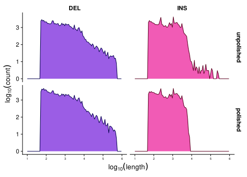
ggsave(here::here("docs/plots/sv_analysis/20210325_polish_count_comparison.png"),
polish_comp_plot,
device = "png",
width = 15,
height = 9.375,
units = "cm",
dpi = 400)
Plot counts of SV types (per sample)
Get order of SV type by frequency
# Get order
type_order = dplyr::count(sv_df, SVTYPE) %>%
dplyr::arrange(desc(n)) %>%
dplyr::pull(SVTYPE)
# Set palette
pal_svtype = grDevices::colorRampPalette(pal_brainbow)(length(ont_samples_pol))
names(pal_svtype) = ont_samples_pol
All
sv_counts_all = sv_df %>%
dplyr::filter(DATASET == "polished") %>%
group_by(SAMPLE, SVTYPE) %>%
summarise(N = n()) %>%
dplyr::mutate(FACET = "TOTAL") %>%
dplyr::ungroup()
## `summarise()` has grouped output by 'SAMPLE'. You can override using the `.groups` argument.
Singletons
# Create DF with SAMPLE for binding later
sv_df_pol_samps = sv_df %>%
# exclude raw data, take only polished
dplyr::filter(DATASET == "polished") %>%
# select only target cols
dplyr::select(CHROM, POS, SVTYPE, LN, SAMPLE)
# Create DF without SAMPLE for detecting duplicates
sv_df_pol_dupes = sv_df %>%
# exclude raw data, take only polished
dplyr::filter(DATASET == "polished") %>%
# select only target cols
dplyr::select(CHROM, POS, SVTYPE, LN)
## Get unique rows
uq_svs = sv_df_pol_dupes[!(duplicated(sv_df_pol_dupes) | duplicated(sv_df_pol_dupes, fromLast = T)), ]
# Join back with other variables
sv_sings = dplyr::right_join(sv_df_pol_samps, uq_svs)
## Joining, by = c("CHROM", "POS", "SVTYPE", "LN")
DT::datatable(head(sv_sings, 100))
# Get singleton counts
sv_counts_sings = sv_sings %>%
dplyr::group_by(SAMPLE, SVTYPE) %>%
dplyr::summarise(N = n()) %>%
dplyr::mutate(FACET = "SINGLETONS") %>%
dplyr::ungroup()
## `summarise()` has grouped output by 'SAMPLE'. You can override using the `.groups` argument.
Bind together and plot
# Bind DFs
sv_counts = dplyr::bind_rows(sv_counts_all,
sv_counts_sings) %>%
dplyr::mutate(FACET = factor(FACET, levels = c("TOTAL", "SINGLETONS")),
SVTYPE = factor(SVTYPE, levels = type_order))
# Set palette
pal_svcounts = grDevices::colorRampPalette(pal_smrarvo)(length(ont_samples))
names(pal_svcounts) = ont_samples
# Plot
svtype_counts_plot = sv_counts %>%
ggplot() +
geom_col(aes(SAMPLE, N, fill = SAMPLE)) +
facet_grid(rows = vars(FACET),
cols = vars(SVTYPE),scales = "free_y") +
scale_fill_manual(values = pal_svcounts) +
theme_cowplot() +
theme(strip.background = element_blank(),
axis.text.x = element_text(size = 5,angle = 45,hjust = 1),
strip.text.x = element_text(face = "bold")) +
guides(fill = "none") +
xlab("Sample") +
ylab("Count")
ggplotly(svtype_counts_plot)
Get summary counts and percentages of SV types
# Min, max and mean counts across samples per SVTYPE
sv_counts %>%
filter(FACET == "TOTAL") %>%
# split by SVTYPE
split(f = .$SVTYPE) %>%
# get max and min counts across all samples
map(., function(x){
data.frame(MIN = min(x$N),
MAX = max(x$N),
MEAN = mean(x$N),
SD = sd(x$N))
}) %>%
bind_rows(.id = "SVTYPE")
## SVTYPE MIN MAX MEAN SD
## 1 DEL 35852 37841 37041.4444 603.07506
## 2 INS 28295 30464 29539.6667 625.69421
## 3 TRA 3311 3713 3486.8889 137.27932
## 4 DUP 2583 2777 2665.6667 69.93390
## 5 INV 590 634 616.5556 14.62114
# Percentage singletons
sv_counts %>%
pivot_wider(id_cols = c(SAMPLE, SVTYPE),
names_from = FACET,
values_from = N) %>%
mutate(PERC_SING = SINGLETONS/TOTAL * 100) %>%
group_by(SVTYPE) %>%
summarise(max(PERC_SING),
min(PERC_SING),
mean(PERC_SING))
## # A tibble: 5 × 4
## SVTYPE `max(PERC_SING)` `min(PERC_SING)` `mean(PERC_SING)`
## <fct> <dbl> <dbl> <dbl>
## 1 DEL 12.7 10.8 11.9
## 2 INS 15.4 12.6 14.2
## 3 TRA 10.5 7.06 8.55
## 4 DUP 8.46 6.08 7.09
## 5 INV 9.36 4.33 6.78
# Ranges, mean, and 90th percentiles of SVLEN per SVTYPE
svtype_distinct_df %>%
group_by(SVTYPE) %>%
summarise(max(LN),
min(LN),
mean(LN),
quantile(LN, 0.9))
## # A tibble: 4 × 5
## SVTYPE `max(LN)` `min(LN)` `mean(LN)` `quantile(LN, 0.9)`
## <fct> <int> <int> <dbl> <dbl>
## 1 DEL 493854 51 2583. 3815
## 2 INS 13649 51 776. 2053
## 3 DUP 494748 52 19197. 47864.
## 4 INV 499229 53 70524. 290308.
Circos plots
SVGs become very large (~80 MB). Hence PNG.
DEL
sv_dels = sv_df %>%
dplyr::filter(DATASET == "polished",
SVTYPE == "DEL") %>%
dplyr::select(CHROM, POS, END, SAMPLE, LN) %>%
dplyr::mutate(SAMPLE = factor(SAMPLE, levels = ont_samples_pol)) %>%
split(., f = .$SAMPLE)
out_plot = here::here("docs/plots/sv_analysis/20210325_sv_dels_lines.png")
png(out_plot,
width = 20,
height = 20,
units = "cm",
res = 400)
# Get max value for `ylim`
max_len = max(sapply(sv_dels, function(sample) max(sample$LN)))
max_len = round.choose(max_len, 1e5, dir = 1)
# Choose palette
pal = grDevices::colorRampPalette(pal_smrarvo)(length(sv_dels))
# Set parameters
## Decrease cell padding from default c(0.02, 1.00, 0.02, 1.00)
circos.par(cell.padding = c(0, 0, 0, 0),
track.margin = c(0, 0),
gap.degree = c(rep(1, nrow(chroms) - 1), 14))
# Initialize plot
circos.initializeWithIdeogram(chroms,
plotType = c("axis", "labels"),
major.by = 1e7,
axis.labels.cex = 0.25*par("cex"))
# Print label in center
text(0, 0, "DEL")
counter = 0
lapply(sv_dels, function(sample) {
# Set counter
counter <<- counter + 1
# Create track
circos.genomicTrack(sample,
panel.fun = function(region, value, ...) {
circos.genomicLines(region,
value,
type = "h",
col = pal[counter],
cex = 0.05)
},
track.height = 0.07,
bg.border = NA,
ylim = c(0, max_len))
# Add SV length y-axis label
circos.yaxis(side = "right",
at = c(2.5e5, max_len),
labels.cex = 0.25*par("cex"),
tick.length = 2
)
# Add SAMPLE y-axis label
circos.text(2e6, 2.5e5,
labels = names(sv_dels)[counter],
sector.index = "chr1",
cex = 0.4*par("cex"))
})
circos.clear()
dev.off()
knitr::include_graphics(out_plot)
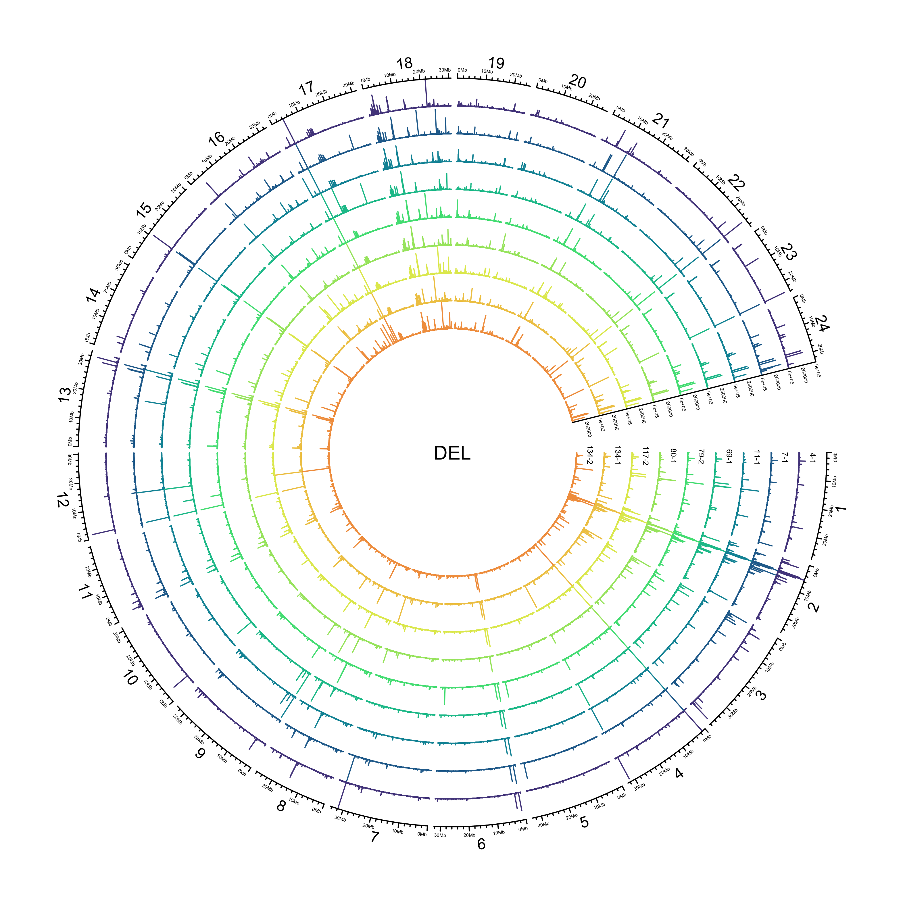
INS
NOTE: 25982/351996 insertions have an END that is less than POS. Make the END the same as POS for the purposes of plotting their location.
sv_ins = sv_df %>%
dplyr::filter(DATASET == "polished",
SVTYPE == "INS") %>%
dplyr::select(CHROM, POS, END, SAMPLE, LN) %>%
# Factorise SAMPLE to order
dplyr::mutate(SAMPLE = factor(SAMPLE, levels = ont_samples_pol)) %>%
# if END is less than POS, make it the same as POS
dplyr::mutate(END = dplyr::if_else(END < POS, POS, END)) %>%
# dplyr::slice_sample(n = 10000) %>%
split(., f = .$SAMPLE)
out_plot = here::here("docs/plots/sv_analysis/20210325_sv_ins_lines.png")
png(out_plot,
width = 20,
height = 20,
units = "cm",
res = 400)
# Get max value for `ylim`
max_len = max(sapply(sv_ins, function(sample) max(sample$LN)))
max_len = round.choose(max_len, 1e4, dir = 1)
# Choose palette
pal = fishualize::fish(n = length(sv_ins), option = "Cirrhilabrus_solorensis")
# Set parameters
## Decrease cell padding from default c(0.02, 1.00, 0.02, 1.00)
circos.par(cell.padding = c(0, 0, 0, 0),
track.margin = c(0, 0),
gap.degree = c(rep(1, nrow(chroms) - 1), 14))
# Initialize plot
circos.initializeWithIdeogram(chroms,
plotType = c("axis", "labels"),
major.by = 1e7,
axis.labels.cex = 0.25*par("cex"))
# Print label in center
text(0, 0, "INS")
counter = 0
lapply(sv_ins, function(sample) {
# Set counter
counter <<- counter + 1
# Create track
circos.genomicTrack(sample,
panel.fun = function(region, value, ...) {
circos.genomicLines(region,
value,
type = "h",
col = pal[counter],
cex = 0.05)
},
track.height = 0.07,
bg.border = NA,
ylim = c(0, max_len))
# Add SV length y-axis label
circos.yaxis(side = "right",
at = c(2.5e5, max_len),
labels.cex = 0.25*par("cex"),
tick.length = 2
)
# Add SAMPLE y-axis label
circos.text(2e6, 1e4,
labels = names(sv_ins)[counter],
sector.index = "chr1",
cex = 0.4*par("cex"))
})
circos.clear()
dev.off()
knitr::include_graphics(out_plot)
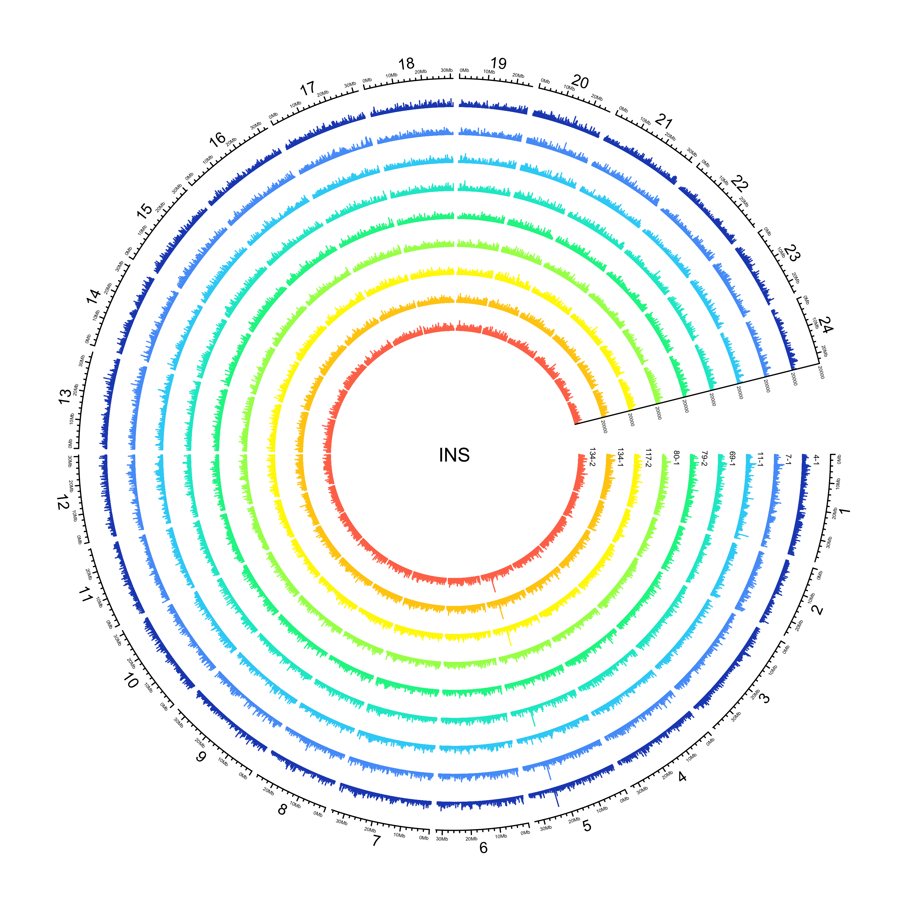
DUP
NOTE: 307/26823 duplications have an END that is less than POS. Make the END the same as POS.
sv_dups = sv_df %>%
dplyr::filter(DATASET == "polished",
SVTYPE == "DUP") %>%
dplyr::select(CHROM, POS, END, SAMPLE, LN) %>%
dplyr::mutate(SAMPLE = factor(SAMPLE, levels = ont_samples_pol)) %>%
# if END is less than POS, make it the same as POS
dplyr::mutate(END = dplyr::if_else(END < POS, POS, END)) %>%
# dplyr::slice_sample(n = 10000) %>%
split(., f = .$SAMPLE)
out_plot = here::here("docs/plots/sv_analysis/20210325_sv_dups_lines.png")
png(out_plot,
width = 20,
height = 20,
units = "cm",
res = 400)
# Get max value for `ylim`
max_len = max(sapply(sv_dups, function(sample) max(sample$LN)))
max_len = round.choose(max_len, 1e5, dir = 1)
# Choose palette
pal = fishualize::fish(n = length(sv_dups), option = "Gramma_loreto")
# Set parameters
## Decrease cell padding from default c(0.02, 1.00, 0.02, 1.00)
circos.par(cell.padding = c(0, 0, 0, 0),
track.margin = c(0, 0),
gap.degree = c(rep(1, nrow(chroms) - 1), 14))
# Initialize plot
circos.initializeWithIdeogram(chroms,
plotType = c("axis", "labels"),
major.by = 1e7,
axis.labels.cex = 0.25*par("cex"))
# Print label in center
text(0, 0, "DUP")
counter = 0
lapply(sv_dups, function(sample) {
# Set counter
counter <<- counter + 1
# Create track
circos.genomicTrack(sample,
panel.fun = function(region, value, ...) {
circos.genomicLines(region,
value,
type = "h",
col = pal[counter],
cex = 0.05)
},
track.height = 0.07,
bg.border = NA,
ylim = c(0, max_len))
# Add SV length y-axis label
circos.yaxis(side = "right",
at = c(2.5e5, max_len),
labels.cex = 0.25*par("cex"),
tick.length = 2
)
# Add SAMPLE y-axis label
circos.text(2e6, 2.5e5,
labels = names(sv_dups)[counter],
sector.index = "chr1",
cex = 0.4*par("cex"))
})
circos.clear()
dev.off()
knitr::include_graphics(out_plot)
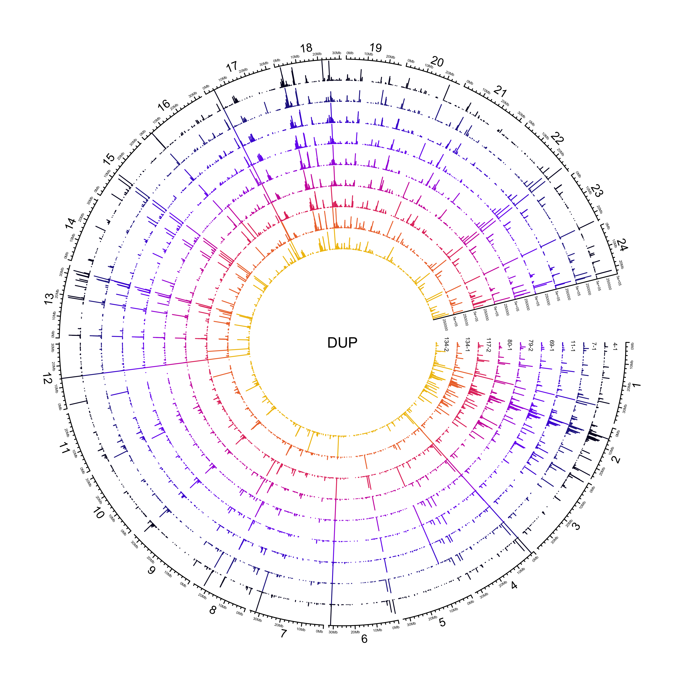
INV
sv_invs = sv_df %>%
dplyr::filter(DATASET == "polished",
SVTYPE == "INV") %>%
dplyr::select(CHROM, POS, END, SAMPLE, LN) %>%
dplyr::mutate(SAMPLE = factor(SAMPLE, levels = ont_samples_pol)) %>%
# if END is less than POS, make it the same as POS
# dplyr::mutate(END = dplyr::if_else(END < POS, POS, END)) %>%
# dplyr::slice_sample(n = 10000) %>%
split(., f = .$SAMPLE)
out_plot = here::here("docs/plots/sv_analysis/20210325_sv_invs_lines.png")
png(out_plot,
width = 20,
height = 20,
units = "cm",
res = 400)
# Get max value for `ylim`
max_len = max(sapply(sv_invs, function(sample) max(sample$LN)))
max_len = round.choose(max_len, 1e5, dir = 1)
# Choose palette
pal = fishualize::fish(n = length(sv_invs), option = "Lepomis_megalotis")
# Set parameters
## Decrease cell padding from default c(0.02, 1.00, 0.02, 1.00)
circos.par(cell.padding = c(0, 0, 0, 0),
track.margin = c(0, 0),
gap.degree = c(rep(1, nrow(chroms) - 1), 14))
# Initialize plot
circos.initializeWithIdeogram(chroms,
plotType = c("axis", "labels"),
major.by = 1e7,
axis.labels.cex = 0.25*par("cex"))
# Print label in center
text(0, 0, "INV")
counter = 0
lapply(sv_invs, function(sample) {
# Set counter
counter <<- counter + 1
# Create track
circos.genomicTrack(sample,
panel.fun = function(region, value, ...) {
circos.genomicLines(region,
value,
type = "h",
col = pal[counter],
cex = 0.05)
},
track.height = 0.07,
bg.border = NA,
ylim = c(0, max_len))
# Add SV length y-axis label
circos.yaxis(side = "right",
at = c(2.5e5, max_len),
labels.cex = 0.25*par("cex"),
tick.length = 2
)
# Add SAMPLE y-axis label
circos.text(2e6, 2.5e5,
labels = names(sv_invs)[counter],
sector.index = "chr1",
cex = 0.4*par("cex"))
})
circos.clear()
dev.off()
knitr::include_graphics(out_plot)

TRA
out_dir = here::here("docs/plots/sv_analysis/20210326_tras")
in_samples = ont_samples_pol
pal = fishualize::fish(n = length(in_samples), option = "Scarus_quoyi")
counter = 0
lapply(in_samples, function(TARGET_SAMPLE){
# Set counter
counter <<- counter + 1
# Get data
sv_tras = sv_df %>%
dplyr::filter(DATASET == "polished",
SVTYPE == "TRA") %>%
# test with single sample
dplyr::filter(SAMPLE == TARGET_SAMPLE) %>%
# select key columns
dplyr::select(CHROM, POS, ALT, CHR2, END)
loc_1 = sv_tras %>%
dplyr::select(CHROM, START = POS, END = POS)
loc_2 = sv_tras %>%
dplyr::select(CHROM = CHR2, START = END, END = END) %>%
dplyr::mutate(CHROM = paste("chr", CHROM, sep = ""))
out_plot = here::here(out_dir, paste(TARGET_SAMPLE, ".png", sep = ""))
png(out_plot,
width = 20,
height = 20,
units = "cm",
res = 400)
# Set parameters
## Decrease cell padding from default c(0.02, 1.00, 0.02, 1.00)
circos.par(cell.padding = c(0, 0, 0, 0),
track.margin = c(0, 0),
gap.degree = c(rep(1, nrow(chroms) - 1), 6))
# Initialize plot
circos.initializeWithIdeogram(chroms,
plotType = c("axis", "labels"),
major.by = 1e7,
axis.labels.cex = 0.25*par("cex"))
circos.genomicLink(loc_1, loc_2,
col = grDevices::adjustcolor(pal[counter], alpha.f = 0.4),
lwd = .25*par("lwd"),
border = NA)
circos.text(0, 0,
labels = TARGET_SAMPLE,
sector.index = "chr1",
facing = "clockwise",
adj = c(0.5, -0.5),
cex = 1.5*par("cex"))
circos.clear()
dev.off()
})
knitr::include_graphics(list.files(out_dir, full.names = T))


Main figure
final_svtype = ggdraw() +
draw_image(here::here("docs/plots/sv_analysis/20210325_sv_dels_lines.png"),
x = 0, y = 0, width = 1, height = .75, scale = 1.12) +
draw_plot(svtype_counts_plot,
x = 0, y = .75, width = .5, height = .25) +
draw_plot(svlen_counts_plot,
x = .5, y = .75, width =.5, height = .25) +
draw_plot_label(label = c("A", "B", "C"), size = 25,
x = c(0, .5, 0), y = c(1, 1, .75),color = "#4f0943")
final_svtype
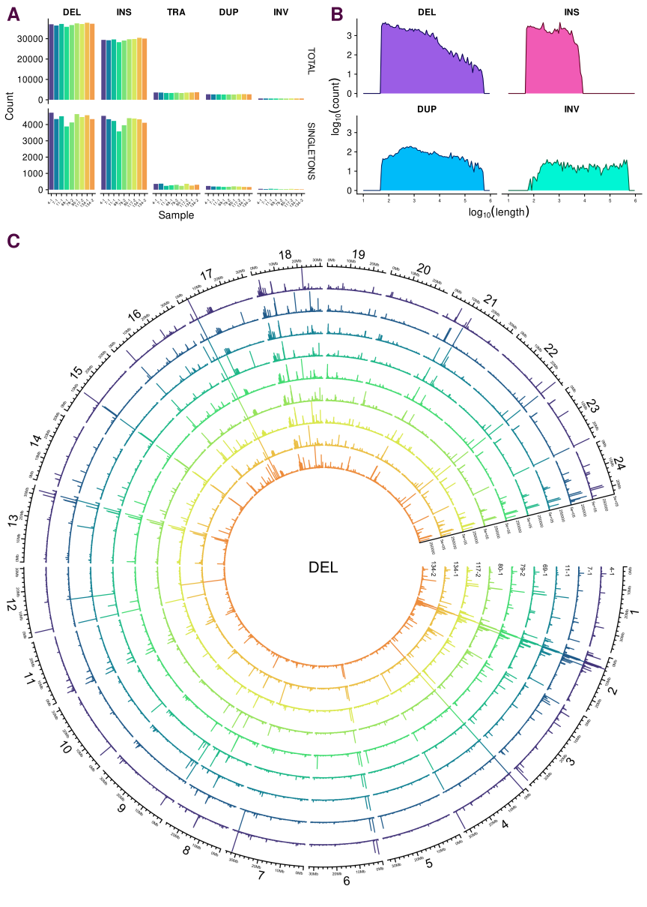
ggsave(here::here("docs/plots/sv_analysis/20210325_sv_main.png"),
device = "png",
dpi = 400,
units = "cm",
width = 30,
height = 42)
How many unique SVs?
# Total count of unique SVs
length(unique(sv_df_pol$ID))
## [1] 143326
# By SV Type
sv_df_pol %>%
dplyr::filter(!duplicated(ID)) %>%
dplyr::group_by(SVTYPE) %>%
dplyr::count()
## # A tibble: 5 × 2
## # Groups: SVTYPE [5]
## SVTYPE n
## <chr> <int>
## 1 DEL 67052
## 2 DUP 5690
## 3 INS 59990
## 4 INV 1356
## 5 TRA 9238
Distribution of singletons across chromosomes
sv_sings %>%
dplyr::mutate(CHROM = gsub("chr", "", CHROM),
CHROM = factor(CHROM, levels = 1:24)) %>%
dplyr::group_by(CHROM, SAMPLE) %>%
dplyr::summarise(N = n()) %>%
dplyr::ungroup() %>%
ggplot() +
geom_col(aes(CHROM, N, fill = CHROM)) +
facet_wrap(~SAMPLE) +
theme_bw() +
theme(axis.text.x = element_text(size = 5)) +
guides(fill = "none") +
ggtitle("Singletons")
## `summarise()` has grouped output by 'CHROM'. You can override using the `.groups` argument.
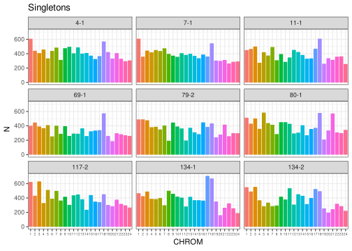
ggsave(here::here(plots_dir, "20210325_singleton_counts_by_chr.png"),
device = "png",
width = 20,
height = 9.375,
units = "cm",
dpi = 400)
Distribution of non-singletons across chromosomes
sv_df %>%
dplyr::filter(DATASET == "polished") %>%
# Exclude singletons
dplyr::anti_join(sv_sings, by = c("CHROM", "POS", "LN")) %>%
# Order CHROM
dplyr::mutate(CHROM = gsub("chr", "", CHROM),
CHROM = factor(CHROM, levels = 1:24)) %>%
dplyr::group_by(CHROM) %>%
dplyr::summarise(N = n()) %>%
tidyr::drop_na() %>%
dplyr::ungroup() %>%
ggplot() +
geom_col(aes(CHROM, N, fill = CHROM)) +
theme_bw() +
guides(fill = "none") +
ggtitle("Non-singletons (i.e. shared by at least two lines)")
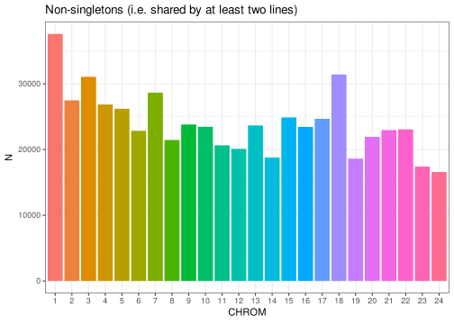
ggsave(here::here(plots_dir, "20210325_shared_svs_by_chr.png"),
device = "png",
width = 15,
height = 9.375,
units = "cm",
dpi = 400)
Investigate interesting variants
Large insertion on chr 5
# Get locations of insertions longer than 300 kb on chr 17
sv_ins %>%
dplyr::bind_rows() %>%
dplyr::filter(CHROM == "chr5" & LN > 10000)
## # A tibble: 6 × 5
## CHROM POS END SAMPLE LN
## <chr> <int> <int> <fct> <int>
## 1 chr5 23770083 23770083 4-1 13649
## 2 chr5 23770083 23770083 7-1 13649
## 3 chr5 23770083 23770083 69-1 13649
## 4 chr5 23770083 23770083 117-2 13649
## 5 chr5 23770083 23770083 134-1 13649
## 6 chr5 23770083 23770083 134-2 13649
grep "23770083" ../sv_analysis/vcfs/ont_raw_with_seq_rehead_per_sample/4-1.vcf
# Returns a sequence that is only 1000 bases long?
#5 23770083 51143 N <INS> . PASS SUPP=12;SUPP_VEC=111111111111;SVLEN=13649;SVTYPE=INS;SVMETHOD=SURVIVOR1.0.7;CHR2=5;END=23770083;CIPOS=0,0;CIEND=0,0;STRANDS=-+GT:PSV:LN:DR:ST:QV:TY:ID:RAL:AAL:CO 1/1:NA:13649:0,6:-+:.:INS:51143:N:TATGAGGGGCTTTATAAGACATTATTTATTCTGAACCATTCACATTCATACATTCTGCTCTCACAGTCATATACTCTTTCGCATACATATATTCTCTTACGCATCCATATATTCTCTCTCACATTCATACATTCTTTGCTCTCACAGTCATATATACTCTCTTTCGCATACATATATTCTCACTTGCACATTCATATATTCTCTCTCGCATGCATATATATTACTTTTACACATACATACATTCTCACTCTATTGTCACTCTTAAAAAGAATGTATGTGTGAAAGACAAGTATATATGAACGTGTGAGGAAGAGTTTATATGTGTGTGTGTGAGAGAGGAGTATGCATGAAACGGAAGTGACTTTGCATGAAAAGGAAGGCACTTGAATGAAAAGAAGGCACTTTGCATGAAACGGAAGGCAGATGATTTCTCGTGCTCTGATTGGACGAGAGGCCGCCACCTCCCATTTTGAACACACTCTAAACCCTATCACTTGTACTGACTCATAACTATTAAGGTTACACAACTCAAATGTCATTTCGTAGTTGGATTCAACTATAAAGTATTAAGCTCTATCAAGATTTTTTCAAATTTAACTTAACAGTGTTAAATATTTTAAAGCTTATTTGTATCTAGCACTCTAAAATTTTAAGATTCCTGAAGTAGCGTCATGATCGTCACACACTGGTGGGAGGGTCTTTCGTTTTCTACGTTAGCTCAGGTGGCCATGTTGGATTTGTCAATGCGAGTATGCGACGTTTTGAAATTGAAAGTCGAGCATTTTATTTTTCTGCAAAGCATTTCGCTCCCGCTTCAAGACGCCCAACTCGGGTTTTTTCATCCGCCTCATCGCTGATGGTGCCGTCTTGTCTTCAGCCCTGATTTAAATTTGGTAAGTATCGTTCATGGTTTATTTTGAACGAATGTTTAAAATGCTCTTATACCACCGTAAATGTGGTTTACTGTTGTTTAAACATATGTGTGTTATGATTGTTTTA:5_23770083-5_23770083
Explore shared variation between 131-1 and HdrR/HNI
Key files:
- 131-1 assembly:
/hps/research1/birney/users/adrien/indigene/analyses/indigene_nanopore_DNA/graph_genome_analysis/individual_assemblies/131-1_F4_clean.fa
HNI reference: /hps/research1/birney/users/adrien/indigene/analyses/indigene_nanopore_DNA/graph_genome_analysis/references/Oryzias_latipes_HNI_clean.fa
You may also like to do against HDrR: /hps/research1/birney/users/adrien/indigene/analyses/indigene_nanopore_DNA/graph_genome_analysis/references/Oryzias_latipes_HDRR_clean.fa
Run minigraph
container=../sing_conts/minigraph.sif
in_fasta=/hps/research1/birney/users/adrien/indigene/analyses/indigene_nanopore_DNA/graph_genome_analysis/individual_assemblies/131-1_F4_clean.fa
ref_pref=/hps/research1/birney/users/adrien/indigene/analyses/indigene_nanopore_DNA/graph_genome_analysis/references/Oryzias_latipes
out_dir=../sv_analysis/pafs
mkdir -p $out_dir
for target_ref in $(echo HNI HDRR ) ; do
bsub \
-M 30000 \
-n 16 \
-o ../log/20210322_minigraph_$target_ref.out \
-e ../log/20210322_minigraph_$target_ref.err \
"""
singularity exec $container \
/minigraph/minigraph $in_fasta $ref_pref\_$target_ref\_clean.fa \
> $out_dir/MIKK_131-1_to_$target_ref.paf
""" ;
done
# Flip other way around
## Usage: minigraph [options] <target.gfa> <query.fa> [...]
## So use the reference as the target, 131-1 as the query
for target_ref in $(echo HNI HDRR ) ; do
bsub \
-M 20000 \
-n 16 \
-o ../log/20210322_minigraph_flipped_$target_ref.out \
-e ../log/20210322_minigraph_flipped_$target_ref.err \
"""
singularity exec $container \
/minigraph/minigraph $ref_pref\_$target_ref\_clean.fa $in_fasta \
> $out_dir/$target_ref\_to_MIKK_131-1.paf
""" ;
done
data_dir=data/sv_analysis/pafs
mkdir -p $data_dir && cp $out_dir/*131-1.paf $data_dir
Documentation for paf format: https://github.com/lh3/miniasm/blob/master/PAF.md
Read in data
in_dir = here::here("data/sv_analysis/pafs")
in_files = list.files(in_dir, full.names = T)
names(in_files) = basename(in_files) %>%
stringr::str_split(., pattern = "_", simplify = T) %>%
subset(select = 1)
col_names = c("QUERY_SEQ_NAME",
"QUERY_SEQ_LEN",
"QUERY_START",
"QUERY_END",
"STRAND",
"TARGET_NAME",
"TARGET_LEN",
"TARGET_START",
"TARGET_END",
"RESIDUE_MATCHES",
"BLOCK_LENGTH",
"MAPPING_QUALITY")
pafs = purrr::map(in_files, function(x) {
readr::read_tsv(x,
col_names = col_names,
col_types = "ciiicciiiiii-----")
})
Circos
Process intrgression data
in_file = here::here("data/introgression/abba_sliding_final_131-1/1000000_250.txt")
# Read in data
df_intro = readr::read_csv(in_file) %>%
dplyr::arrange(p1, p2, scaffold, start)
# Convert fd to 0 if D < 0
df_intro$fd = ifelse(df_intro$D < 0,
0,
df_intro$fd)
# Change names
df_intro = df_intro %>%
dplyr::mutate(p2 = recode(df_intro$p2, hdrr = "HdrR", hni = "HNI", hsok = "HSOK"))
# Get mean of javanicus and melastigma
df_intro = df_intro %>%
pivot_wider(id_cols = c(scaffold, start, end, mid, p2), names_from = p1, values_from = fd) %>%
# get mean of melastigma/javanicus
dplyr::mutate(mean_fd = rowMeans(dplyr::select(., melastigma, javanicus), na.rm = T)) %>%
dplyr::arrange(p2, scaffold, start) %>%
dplyr::select(scaffold, mid_1 = mid, mid_2 = mid, mean_fd, p2) %>%
dplyr::mutate(scaffold = paste("chr", scaffold, sep ="")) %>%
split(., f = .$p2)
Process alignment data
pal_length = 1000
# Get palette
pal_viridis = viridis(pal_length)
names(pal_viridis) = 1:pal_length
pal_inferno = inferno(pal_length)
names(pal_inferno) = 1:pal_length
counter = 0
# Process data
paf_clean = pafs %>%
purrr::map(function(x) {
# Set counter
counter <<- counter + 1
# Select palette
if (names(pafs)[counter] == "HDRR"){
pal_chosen = pal_viridis
} else if (names(pafs)[counter] == "HNI"){
pal_chosen = pal_inferno
}
# Clean data
x %>%
dplyr::mutate(TARGET_MID = round(TARGET_START + ((TARGET_END - TARGET_START) / 2)),
CHROM = stringr::str_replace_all(TARGET_NAME, c("HDRR_" = "chr", "HNI_" = "chr")),
CHROM = factor(CHROM, levels = paste("chr", 1:24, sep = "")),
PERCENT_MATCHED = RESIDUE_MATCHES / BLOCK_LENGTH,
LOG_BLOCK_LENGTH = log10(BLOCK_LENGTH),
COL = cut(PERCENT_MATCHED, breaks = 1000, labels = F),
COL = dplyr::recode(COL, !!!pal_chosen)) %>%
# dplyr::slice_sample(n = 1000) %>%
dplyr::arrange(CHROM, TARGET_START)
})
HdrR
out_plot = here::here("docs/plots/sv_analysis/20210323_circos_hdrr_alignments.png")
png(out_plot,
width = 20,
height = 20,
units = "cm",
res = 500)
ylim = c(1, 6.05)
target_line = "HdrR"
# Set parameters
## Decrease cell padding from default c(0.02, 1.00, 0.02, 1.00)
circos.par(cell.padding = c(0, 0, 0, 0),
track.margin = c(0, 0),
gap.degree = c(rep(1, nrow(chroms) - 1), 6))
# Initialize plot
circos.initializeWithIdeogram(chroms,
plotType = c("axis", "labels"),
major.by = 1e7,
axis.labels.cex = 0.25*par("cex"))
# Print label in center
text(0, 0, "131-1\nto\nHdrR")
###############
# Introgression
###############
circos.genomicTrack(df_intro[[target_line]],
panel.fun = function(region, value, ...){
circos.genomicLines(region,
value[[1]],
col = pal_abba[[target_line]])
# Add baseline
circos.xaxis(h = "bottom",
labels = F,
major.tick = F)
},
track.height = 0.1,
bg.border = NA,
ylim = c(0, 1))
# Add axis for introgression
circos.yaxis(side = "right",
at = c(.5, 1),
labels.cex = 0.25*par("cex"),
tick.length = 2
)
# Add y-axis label for introgression
circos.text(0, 0.5,
labels = expression(italic(f[d])),
sector.index = "chr1",
facing = "clockwise",
adj = c(.5, -1.5),
cex = 0.4*par("cex"))
###############
# Alignments
###############
circos.genomicTrack(paf_clean[[stringr::str_to_upper(target_line)]] %>%
dplyr::select(CHROM, TARGET_START, TARGET_END,
LOG_BLOCK_LENGTH, PERCENT_MATCHED, COL),
panel.fun = function(region, value, ...){
circos.genomicLines(region,
value[[1]],
type = "segment",
col = value[[3]],
lwd = 1.5)
}, track.height = 0.7,
bg.border = NA,
ylim = ylim
)
# Add SV length y-axis label
circos.yaxis(side = "right",
at = 1:6,
labels.cex = 0.25*par("cex"),
tick.length = 2
)
# Add y-axis label
circos.text(0, 3.75,
labels = expression(log[10](length)),
sector.index = "chr1",
facing = "clockwise",
adj = c(0.5, -0.5),
cex = 0.4*par("cex"))
circos.clear()
dev.off()
knitr::include_graphics(out_plot)

HNI
Create chroms file for HNI
# Get chrs
grep ">" ../refs/Oryzias_latipes_hni.ASM223471v1.dna.toplevel.fa | cut -f1 -d" " | sed 's/>//g' > tmp1
# Get lengths
grep ">" ../refs/Oryzias_latipes_hni.ASM223471v1.dna.toplevel.fa | cut -f3 -d' ' | cut -f5 -d':' > tmp2
# Paste and send to file
paste tmp1 tmp2 > data/Oryzias_latipes_hni.ASM223471v1.dna.toplevel.fa_chr_counts.txt
# Clean up
rm tmp1 tmp2
# Read in chromosome data
chroms_hni = read.table(here::here("data/Oryzias_latipes_hni.ASM223471v1.dna.toplevel.fa_chr_counts.txt")) %>%
dplyr::select(chr = V1, end = V2) %>%
dplyr::mutate(chr = paste("chr", chr, sep = ""),
start = 0,
end = as.numeric(end)) %>%
dplyr::select(chr, start, end)
out_plot = here::here("docs/plots/sv_analysis/20210323_circos_hni_alignments.png")
png(out_plot,
width = 20,
height = 20,
units = "cm",
res = 500)
ylim = c(1, 6.27)
target_line = "HNI"
# Set parameters
## Decrease cell padding from default c(0.02, 1.00, 0.02, 1.00)
circos.par(cell.padding = c(0, 0, 0, 0),
track.margin = c(0, 0),
gap.degree = c(rep(1, nrow(chroms_hni) - 1), 6))
# Initialize plot
circos.initializeWithIdeogram(chroms_hni,
plotType = c("axis", "labels"),
major.by = 1e7,
axis.labels.cex = 0.25*par("cex"))
# Print label in center
text(0, 0, "131-1\nto\nHNI")
###############
# Introgression
###############
circos.genomicTrack(df_intro[[target_line]],
panel.fun = function(region, value, ...){
circos.genomicLines(region,
value[[1]],
col = pal_abba[[target_line]])
# Add baseline
circos.xaxis(h = "bottom",
labels = F,
major.tick = F)
},
track.height = 0.1,
bg.border = NA,
ylim = c(0, 1))
# Add axis for introgression
circos.yaxis(side = "right",
at = c(.5, 1),
labels.cex = 0.25*par("cex"),
tick.length = 2
)
# Add y-axis label for introgression
circos.text(0, 0.5,
labels = expression(italic(f[d])),
sector.index = "chr1",
facing = "clockwise",
adj = c(.5, -1.5),
cex = 0.4*par("cex"))
###############
# Alignments
###############
circos.genomicTrack(paf_clean[[target_line]] %>%
dplyr::select(CHROM, TARGET_START, TARGET_END,
LOG_BLOCK_LENGTH, PERCENT_MATCHED, COL),
panel.fun = function(region, value, ...){
circos.genomicLines(region,
value[[1]],
type = "segment",
col = value[[3]],
lwd = 1.5)
}, track.height = 0.7,
bg.border = NA,
ylim = ylim
)
# Add SV length y-axis label
circos.yaxis(side = "right",
at = 1:6,
labels.cex = 0.25*par("cex"),
tick.length = 2
)
# Add y-axis label
circos.text(0, 3.75,
labels = expression(log[10](length)),
sector.index = "chr1",
facing = "clockwise",
adj = c(0.5, -0.5),
cex = 0.4*par("cex"))
circos.clear()
dev.off()
knitr::include_graphics(out_plot)

Histograms showing distribution of identity
paf_clean %>%
dplyr::bind_rows(.id = "REFERENCE") %>%
dplyr::mutate(REFERENCE = dplyr::recode(REFERENCE, HDRR = "HdrR")) %>%
ggplot() +
geom_density(aes(PERCENT_MATCHED, fill = REFERENCE)) +
facet_wrap(~REFERENCE) +
theme_bw() +
guides(fill = "none") +
scale_fill_manual(values = pal_abba) +
xlab("BLAST identity")
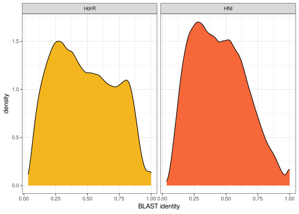
ggsave(here::here(plots_dir, "20210323_131-1_identity_density.png"),
device = "png",
width = 20,
height = 9.375,
units = "cm",
dpi = 400)
Get circos for all 131 sibling lines
in_dir = here::here("data/introgression/abba_sliding_final_131")
in_files = list.files(in_dir, full.names = T)
names(in_files) = basename(in_files) %>%
stringr::str_split("_") %>%
purrr::map_chr(~ purrr::pluck(.x, 1))
# Read and process data
list_131 = purrr::map(in_files, readr::read_csv) %>%
map(~ .x %>%
dplyr::arrange(p1, p2, scaffold, start) %>%
dplyr::mutate(fd = if_else(D < 0, 0, fd),
p2 = recode(p2, hdrr = "HdrR", hni = "HNI", hsok = "HSOK")) %>%
tidyr::pivot_wider(id_cols = c(scaffold, start, end, mid, p2), names_from = p1, values_from = fd) %>%
# get mean of melastigma/javanicus
dplyr::mutate(mean_fd = rowMeans(dplyr::select(., melastigma, javanicus), na.rm = T)) %>%
dplyr::arrange(p2, scaffold, start) %>%
dplyr::select(scaffold, mid_1 = mid, mid_2 = mid, mean_fd, p2) %>%
dplyr::mutate(scaffold = paste("chr", scaffold, sep ="")) %>%
split(., f = .$p2)
)
HNI
out_plot = here::here("docs/plots/sv_analysis/20210324_circos_131_siblines_HNI.png")
png(out_plot,
width = 20,
height = 20,
units = "cm",
res = 500)
# Set parameters
## Decrease cell padding from default c(0.02, 1.00, 0.02, 1.00)
circos.par(cell.padding = c(0, 0, 0, 0),
track.margin = c(0, 0),
gap.degree = c(rep(1, nrow(chroms) - 1), 6))
# Initialize plot
circos.initializeWithIdeogram(chroms,
plotType = c("axis", "labels"),
major.by = 1e7,
axis.labels.cex = 0.25*par("cex"))
# Print label in center
text(0, 0, "131 sib-lines\nintrogression\nwith\nHNI")
###############
# Introgression
###############
counter = 0
purrr::map(list_131, function(sib_line){
# Set counter
counter <<- counter + 1
circos.genomicTrack(sib_line[["HNI"]],
panel.fun = function(region, value, ...){
circos.genomicLines(region,
value[[1]],
col = pal_abba[["HNI"]])
# Add baseline
circos.xaxis(h = "bottom",
labels = F,
major.tick = F)
},
track.height = 0.1,
bg.border = NA,
ylim = c(0, 1))
# Add axis for introgression
circos.yaxis(side = "right",
at = c(.5, 1),
labels.cex = 0.25*par("cex"),
tick.length = 2
)
# Add y-axis label for introgression
circos.text(0, 0.5,
labels = expression(italic(f[d])),
sector.index = "chr1",
# facing = "clockwise",
adj = c(3, 0.5),
cex = 0.4*par("cex"))
# Add y-axis label for introgression
circos.text(0, 0.5,
labels = names(list_131)[counter],
sector.index = "chr1",
facing = "clockwise",
# adj = c(.5, -1.5),
cex = 0.6*par("cex"))
})
circos.clear()
dev.off()
knitr::include_graphics(out_plot)

HdrR and HNI
out_plot = here::here("docs/plots/sv_analysis/20210324_circos_131_siblines_HdrR_HNI.png")
png(out_plot,
width = 20,
height = 20,
units = "cm",
res = 500)
# Set parameters
## Decrease cell padding from default c(0.02, 1.00, 0.02, 1.00)
circos.par(cell.padding = c(0, 0, 0, 0),
track.margin = c(0, 0),
gap.degree = c(rep(1, nrow(chroms) - 1), 6))
# Initialize plot
circos.initializeWithIdeogram(chroms,
plotType = c("axis", "labels"),
major.by = 1e7,
axis.labels.cex = 0.25*par("cex"))
# Print label in center
text(0, 0, "131 sib-lines\nintrogression\nwith\nHNI and HdrR")
###############
# Introgression
###############
counter = 0
purrr::map(list_131, function(sib_line){
# Set counter
counter <<- counter + 1
circos.genomicTrack(sib_line[["HdrR"]],
panel.fun = function(region, value, ...){
circos.genomicLines(region,
value[[1]],
col = pal_abba[["HdrR"]])
# Add baseline
circos.xaxis(h = "bottom",
labels = F,
major.tick = F)
},
track.height = 0.1,
bg.border = NA,
ylim = c(0, 1))
circos.genomicTrack(sib_line[["HNI"]],
panel.fun = function(region, value, ...){
circos.genomicLines(region,
value[[1]],
col = pal_abba[["HNI"]])
# Add baseline
circos.xaxis(h = "bottom",
labels = F,
major.tick = F)
},
track.height = 0.1,
bg.border = NA,
ylim = c(0, 1))
# Add axis for introgression
circos.yaxis(side = "right",
at = c(.5, 1),
labels.cex = 0.25*par("cex"),
tick.length = 2
)
# Add y-axis label for introgression
circos.text(0, 0.5,
labels = expression(italic(f[d])),
sector.index = "chr1",
# facing = "clockwise",
adj = c(3, 0.5),
cex = 0.4*par("cex"))
# Add y-axis label for introgression
circos.text(0, 0.5,
labels = names(list_131)[counter],
sector.index = "chr1",
facing = "clockwise",
# adj = c(.5, -1.5),
cex = 0.6*par("cex"))
})
circos.clear()
dev.off()
knitr::include_graphics(out_plot)
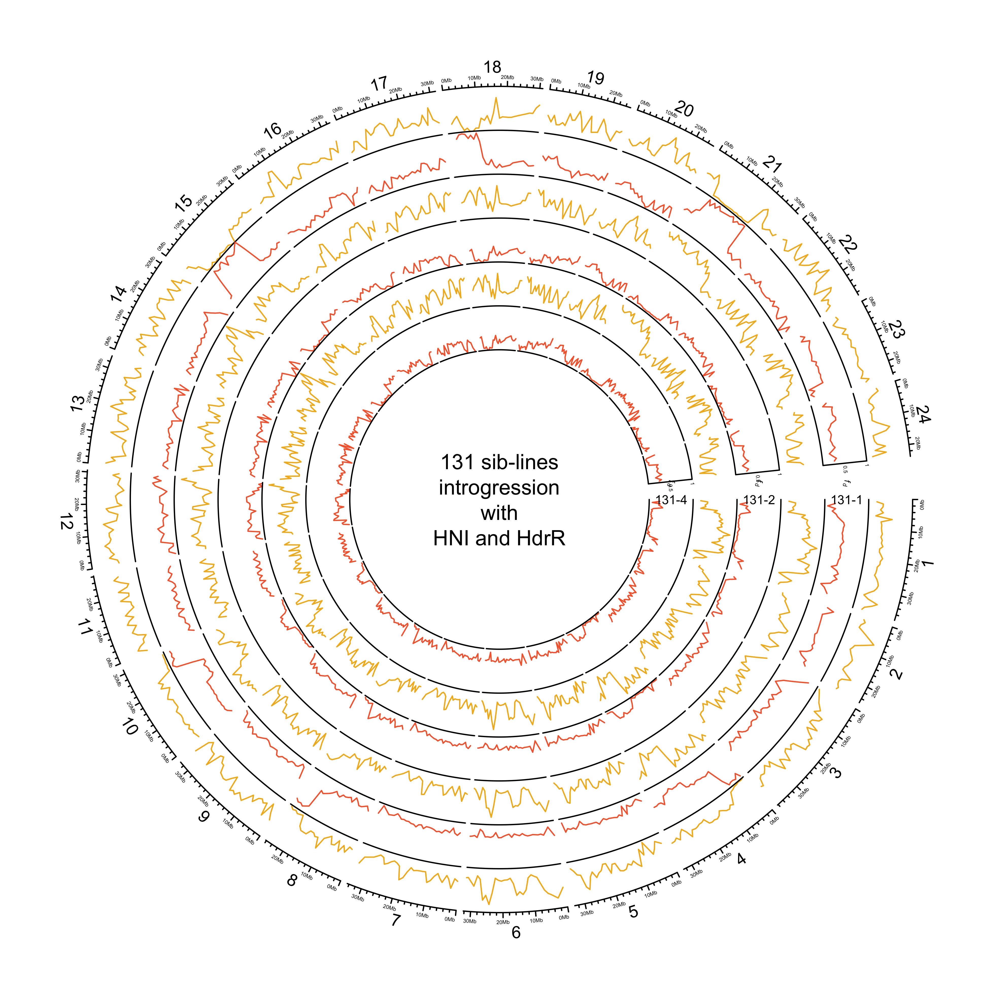
131-1 with HdrR, HNI and Kaga
Read in data
target_dir = here::here("data/introgression/abba_sliding_final_mikk/1000000_250")
files = list.files(target_dir, full.names = T)
names(files) = basename(files) %>%
stringr::str_remove(".txt")
intro_mikk = purrr::map(files, function(x) x %>%
readr::read_csv(.) %>%
dplyr::mutate(fd = if_else(D < 0, 0, fd),
p2 = factor(p2, levels = c("hdrr", "hni", "kaga", "hsok")),
p2 = recode(p2, hdrr = "HdrR", hni = "HNI", hsok = "HSOK", kaga = "Kaga")) %>%
tidyr::pivot_wider(id_cols = c(scaffold, start, end, mid, p2), names_from = p1, values_from = fd) %>%
# get mean of melastigma/javanicus
dplyr::mutate(mean_fd = rowMeans(dplyr::select(., melastigma, javanicus), na.rm = T)) %>%
dplyr::arrange(p2, scaffold, start) %>%
dplyr::select(scaffold, mid_1 = mid, mid_2 = mid, mean_fd, p2) %>%
dplyr::mutate(scaffold = paste("chr", scaffold, sep ="")) %>%
split(., f = .$p2)
)
out_plot = here::here("docs/plots/sv_analysis/20210330_circos_131-1_HdrR_HNI_Kaga_HSOK.png")
png(out_plot,
width = 20,
height = 20,
units = "cm",
res = 500)
# Set parameters
## Decrease cell padding from default c(0.02, 1.00, 0.02, 1.00)
circos.par(cell.padding = c(0, 0, 0, 0),
track.margin = c(0, 0),
gap.degree = c(rep(1, nrow(chroms) - 1), 6))
# Initialize plot
circos.initializeWithIdeogram(chroms,
plotType = c("axis", "labels"),
major.by = 1e7,
axis.labels.cex = 0.25*par("cex"))
# Print label in center
text(0, 0, "131-1 introgression\nwith\nHdrR, HNI,\nKaga and HSOK")
###############
# Introgression
###############
counter = 0
purrr::map(intro_mikk$`131_1`, function(P2){
# Set counter
counter <<- counter + 1
circos.genomicTrack(P2,
panel.fun = function(region, value, ...){
circos.genomicLines(region,
value[[1]],
col = pal_abba[[names(intro_mikk$`131_1`[counter])]],
area = T,
border = karyoploteR::darker(pal_abba[[names(intro_mikk$`131_1`[counter])]]))
# Add baseline
circos.xaxis(h = "bottom",
labels = F,
major.tick = F)
},
track.height = 0.1,
bg.border = NA,
ylim = c(0, 1))
# Add axis for introgression
circos.yaxis(side = "right",
at = c(.5, 1),
labels.cex = 0.25*par("cex"),
tick.length = 2
)
# Add y-axis label for introgression
if (counter == 2) {
circos.text(0, 0,
labels = expression(italic(f[d])),
sector.index = "chr1",
# facing = "clockwise",
adj = c(3, 0.5),
cex = 0.4*par("cex"))
}
# Add y-axis label for introgression
circos.text(0, 0.5,
labels = names(intro_mikk$`131_1`)[counter],
sector.index = "chr1",
facing = "clockwise",
adj = c(.5, 0),
cex = 0.6*par("cex"))
})
circos.clear()
dev.off()
knitr::include_graphics(out_plot)
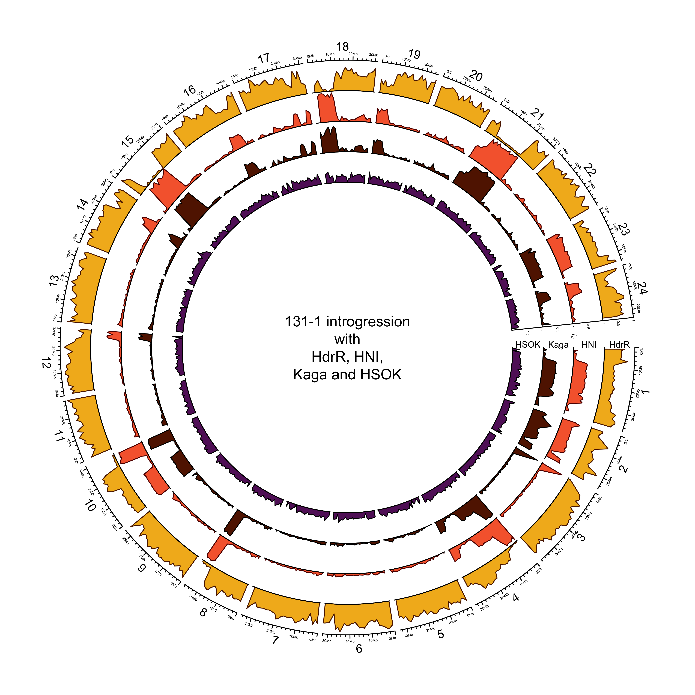
More introgression with HNI or Kaga?
intro_mikk$`131_1` %>%
dplyr::bind_rows() %>%
dplyr::filter(p2 %in% c("HNI", "Kaga")) %>%
dplyr::group_by(p2) %>%
dplyr::summarise(mean(mean_fd),
max(mean_fd))
## # A tibble: 2 × 3
## p2 `mean(mean_fd)` `max(mean_fd)`
## <fct> <dbl> <dbl>
## 1 HNI 0.198 0.986
## 2 Kaga 0.185 0.939
Do the same for each MIKK line
counter_mikk = 0
lapply(intro_mikk, function(MIKK_LINE){
# Set counter_mikk
counter_mikk <<- counter_mikk + 1
# Set plot path
out_plot = here::here("docs/plots/sv_analysis/20210330_circos_mikk",
paste(names(intro_mikk)[counter_mikk], ".png", sep = ""))
# Generate plot
png(out_plot,
width = 20,
height = 20,
units = "cm",
res = 500)
# Set parameters
## Decrease cell padding from default c(0.02, 1.00, 0.02, 1.00)
circos.par(cell.padding = c(0, 0, 0, 0),
track.margin = c(0, 0),
gap.degree = c(rep(1, nrow(chroms) - 1), 6))
# Initialize plot
circos.initializeWithIdeogram(chroms,
plotType = c("axis", "labels"),
major.by = 1e7,
axis.labels.cex = 0.25*par("cex"))
# Print label in center
text(0, 0, paste(names(intro_mikk)[counter_mikk],
" introgression\nwith\nHdrR, HNI,\nKaga and HSOK",
sep = ""))
###############
# Introgression
###############
counter = 0
purrr::map(MIKK_LINE, function(P2){
# Set counter
counter <<- counter + 1
circos.genomicTrack(P2,
panel.fun = function(region, value, ...){
circos.genomicLines(region,
value[[1]],
col = pal_abba[[names(MIKK_LINE[counter])]],
area = T,
border = karyoploteR::darker(pal_abba[[names(MIKK_LINE[counter])]]))
# Add baseline
circos.xaxis(h = "bottom",
labels = F,
major.tick = F)
},
track.height = 0.1,
bg.border = NA,
ylim = c(0, 1))
# Add axis for introgression
circos.yaxis(side = "right",
at = c(.5, 1),
labels.cex = 0.25*par("cex"),
tick.length = 2
)
# Add y-axis label for introgression
if (counter == 2) {
circos.text(0, 0,
labels = expression(italic(f[d])),
sector.index = "chr1",
# facing = "clockwise",
adj = c(3, 0.5),
cex = 0.4*par("cex"))
}
# Add y-axis label for introgression
circos.text(0, 0.5,
labels = names(MIKK_LINE)[counter],
sector.index = "chr1",
facing = "clockwise",
adj = c(.5, 0),
cex = 0.6*par("cex"))
})
circos.clear()
dev.off()
})
Example plot (all lines other than 131-1 look nearly identical).
knitr::include_graphics(here::here("docs/plots/sv_analysis/20210330_circos_mikk/106_2.png"))
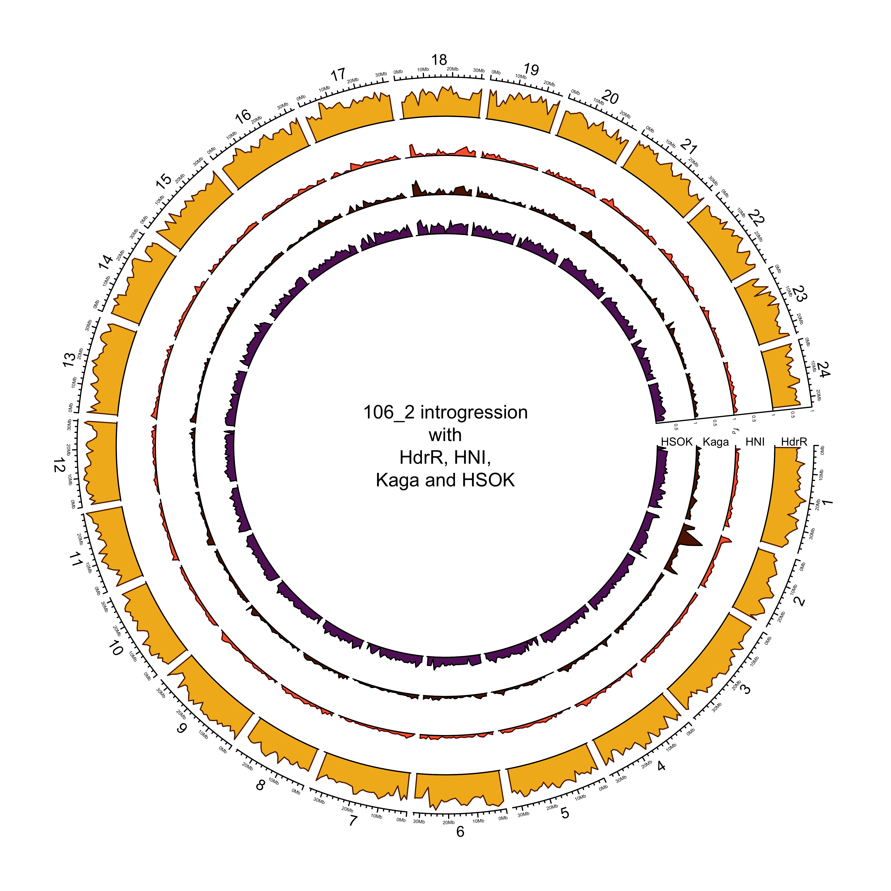
Intersection with repeats
Read in HdrR repeats file
# Read in data
hdrr_reps = read.table(file.path(lts_dir, "repeats/medaka_hdrr_repeats.fixed.gff"),
header = F, sep = "\t", skip = 3, comment.char = "", quote = "", as.is = T) %>%
# Remove empty V8 column
dplyr::select(-V8) %>%
# Get class of repeat from third column
dplyr::mutate(class = stringr::str_split(V3, pattern = "#", simplify = T)[, 1]) %>%
# Rename columns
dplyr::rename(chr = V1, tool = V2, class_full = V3, start = V4, end = V5, percent = V6, strand = V7, info = V9)
# Find types of class other than "(GATCCA)n" types
class_types = unique(hdrr_reps$class[grep(")n", hdrr_reps$class, invert = T)])
hdrr_reps = hdrr_reps %>%
# NA for blanks
dplyr::mutate(class = dplyr::na_if(class, "")) %>%
# "misc" for others in "(GATCCA)n" type classes
dplyr::mutate(class = dplyr::if_else(!class %in% class_types, "Misc.", class)) %>%
# rename "Simple_repeat"
dplyr::mutate(class = dplyr::recode(class, "Simple_repeat" = "Simple repeat"))
Get total bases covered by each class of repeat
# Get ranges per class
hdrr_class_ranges = hdrr_reps %>%
split(.$class) %>%
purrr::map(., function(x){
out = list()
out[["RANGES"]] = GenomicRanges::makeGRangesFromDataFrame(x,
keep.extra.columns = T,
seqnames.field = "chr",
start.field = "start",
end.field = "end")
out[["NON_OVERLAPPING"]] = disjoin(out[["RANGES"]])
out[["COVERAGE_BY_CHR"]] = tibble(CHR = as.vector(seqnames(out[["NON_OVERLAPPING"]])),
WIDTH = width(out[["NON_OVERLAPPING"]])) %>%
dplyr::group_by(CHR) %>%
dplyr::summarise(COVERED = sum(WIDTH)) %>%
dplyr::ungroup() %>%
dplyr::mutate(CHR = factor(CHR, levels = c(1:24, "MT"))) %>%
dplyr::arrange(CHR)
out[["TOTAL_COVERED"]] = sum(width(out[["NON_OVERLAPPING"]]))
return(out)
})
# Coverage per SVTYPE
repeat_cov_by_class = hdrr_class_ranges %>%
purrr::map_int("TOTAL_COVERED") %>%
tibble(CLASS = names(.),
BASES_COVERED = .)
# Total percentage of genome covered by repeats (irrespective of strand)
total_repeat_cov = hdrr_reps %>%
dplyr::select(-strand) %>%
GenomicRanges::makeGRangesFromDataFrame(.,
keep.extra.columns = T,
ignore.strand = T,
seqnames.field = "chr",
start.field = "start",
end.field = "end") %>%
disjoin(.) %>%
width(.) %>%
sum(.)
total_repeat_cov / sum(chroms$end)
## [1] 0.1629319
# Get counts to tell frequency of occurrence
## First get total Mb in HdrR reference
hdrr_mb = sum(chroms$end) / 1e6
hdrr_rep_counts = hdrr_reps %>%
dplyr::rename(CLASS = class) %>%
dplyr::mutate(LENGTH = end - start) %>%
group_by(CLASS) %>%
summarise(N = n(),
MEDIAN_LENGTH = median(LENGTH))
Find intersections with SVs
Get discrete ranges for HdrR repeats
# Convert to ranges
hdrr_reps_ranges = hdrr_reps %>%
# remove strand column to avoid `names of metadata columns cannot be one of "seqnames", "ranges", "strand"...` error
dplyr::select(-strand) %>%
GenomicRanges::makeGRangesFromDataFrame(.,
keep.extra.columns = T,
ignore.strand = T,
seqnames.field = "chr",
start.field = "start",
end.field = "end")
head(hdrr_reps_ranges)
## GRanges object with 6 ranges and 5 metadata columns:
## seqnames ranges strand | tool class_full percent info class
## <Rle> <IRanges> <Rle> | <character> <character> <numeric> <character> <character>
## [1] 1 54-131 * | RepeatMasker DNA#P 14.5 Target "Motif:rnd-4_.. DNA
## [2] 1 85-144 * | RepeatMasker Unknown 16.7 Target "Motif:rnd-6_.. Unknown
## [3] 1 789-866 * | RepeatMasker SINE#tRNA-Core-RTE 19.5 Target "Motif:rnd-6_.. SINE
## [4] 1 921-947 * | RepeatMasker (CA)n 12.2 Target "Motif:(CA)n" Misc.
## [5] 1 4464-4596 * | RepeatMasker LINE#L2 26.9 Target "Motif:DF0004.. LINE
## [6] 1 4478-4599 * | RepeatMasker LINE#L2 28.7 Target "Motif:DF0003.. LINE
## -------
## seqinfo: 25 sequences from an unspecified genome; no seqlengths
# Number of bases covered by some sort of repeat
reduce(hdrr_reps_ranges) %>%
width(.) %>%
sum(.)
## [1] 119598609
# What proportion of total bases?
reduce(hdrr_reps_ranges) %>%
width(.) %>%
sum(.) / sum(chroms$end)
## [1] 0.1629319
So about [one sixth]{color = “red”} of the HdrR genome is composed of repeats.
Convert polished SV df to GRanges and find overlaps
sv_ranges_list = sv_df %>%
dplyr::filter(DATASET == "polished") %>%
# For all TRA, set STOP as POS
dplyr::mutate(STOP = dplyr::if_else(SVTYPE == "TRA",
POS,
END)) %>%
# For 9066/265857 INS and 272/23991 DUP where END is less than POS, set `STOP` as same as `POS`
dplyr::mutate(STOP = dplyr::if_else(SVTYPE %in% c("INS", "DUP") & END < POS,
POS,
STOP)) %>%
# Remove "chr" prefix" from CHROM
dplyr::mutate(CHROM = str_remove(CHROM, "chr")) %>%
# Split by SVTYPE
split(.$SVTYPE) %>%
# Loop over each SVTYPE
purrr::map(., function(x) {
out = list()
# Keep original SV df
out[["SV_df"]] = x
# Convert to ranges
out[["SV_Ranges"]] = GenomicRanges::makeGRangesFromDataFrame(x,
keep.extra.columns = T,
ignore.strand = T,
seqnames.field = "CHROM",
start.field = "POS",
end.field = "STOP",
strand.field = "ST")
# Find overlaps with repeats
out[["Overlaps"]] = findOverlaps(out[["SV_Ranges"]],
hdrr_reps_ranges,
ignore.strand = T)
# Create DF with SV index and overlapping repeats
SV_INDEX = queryHits(out[["Overlaps"]]) # Pull out all SV indices
s_hits = hdrr_reps_ranges[subjectHits(out[["Overlaps"]])] # Pull out all repeat matches
out[["Matches"]] = cbind(SV_INDEX, # Bind into data frame with SV index
REPEAT_LENGTH = width(s_hits), # Length of repeat
as.data.frame(mcols(s_hits))) # And repeat metadata
return(out)
})
Get stats on number and type of overlaps
sv_overlap_stats = lapply(sv_ranges_list, function(x){
out = list()
out[["TOTAL_SVS"]] = nrow(x[["SV_df"]])
out[["TOTAL_OVERLAPPING_REPEAT"]] = length(unique(x[["Matches"]]$SV_INDEX))
out[["PROP_OVERLAPPING"]] = out[["TOTAL_OVERLAPPING_REPEAT"]] / out[["TOTAL_SVS"]]
out[["MEDIAN_MATCHES"]] = x[["Matches"]] %>% count(SV_INDEX) %>% summarise(median(n)) %>% pull
out[["REPEAT_CLASS_COUNTS"]] = x[["Matches"]] %>% count(class)
return(out)
})
# Get proportions of SVs with overlap
map_dbl(sv_overlap_stats, "PROP_OVERLAPPING")
## DEL DUP INS INV TRA
## 0.7175866 0.6300279 0.2087852 0.8057308 0.3466956
How many DEL bases overlap with repeats?
# Total DEL bases
total_del_bases = GenomicRanges::reduce(sv_ranges_list$DEL$SV_Ranges)
total_del_bases = sum(BiocGenerics::width(total_del_bases))
total_del_bases
## [1] 111639227
# Total DEL bases intersecting with repeats
total_del_rep_ints = GenomicRanges::intersect(sv_ranges_list$DEL$SV_Ranges, hdrr_reps_ranges)
total_del_rep_ints = sum(BiocGenerics::width(total_del_rep_ints))
total_del_rep_ints
## [1] 34225753
# Percentage of DEL bases intersecting with repeats
total_del_rep_ints / total_del_bases
## [1] 0.3065746
Why so few overlaps for INS? Check INS length based on whether they overlap or not
sv_ranges_list$INS$SV_df %>%
# Create index
dplyr::mutate(SV_INDEX = rownames(.),
# Get yes/no vector for whether they overlap repeats
OVERLAPPING_REPEAT = dplyr::if_else(SV_INDEX %in% sv_ranges_list$INS$Matches$SV_INDEX,
"yes",
"no")) %>%
ggplot(aes(OVERLAPPING_REPEAT, LN, colour = OVERLAPPING_REPEAT)) +
geom_boxplot() +
scale_y_log10() +
theme_cowplot() +
guides(colour = "none") +
xlab("Overlapping repeat") +
ylab("INS length")

ggsave(here::here("docs/plots/sv_analysis/20210409_INS_repeat_overlap.png"),
device = "png",
dpi = 400,
units = "cm",
width = 20,
height = 12)
Intersection with pLI regions
pli_file = here::here("data/sv_analysis/unique_medaka_hgnc_link_with_pLI_and_annotations.txt")
# Read in data
pli_df = readr::read_tsv(pli_file,
trim_ws = T) %>%
# remove rows with NA in chr
dplyr::filter(!is.na(chr)) %>%
# order
dplyr::arrange(chr, start) %>%
# remove strand column to avoid the following error when converting to GRanges:`names of metadata columns cannot be one of "seqnames", "ranges", "strand"`
dplyr::select(-strand) %>%
# create PLI_INDEX
dplyr::mutate(PLI_INDEX = rownames(.))
# Convert to genomic ranges
pli_ranges = GenomicRanges::makeGRangesFromDataFrame(pli_df,
keep.extra.columns = T,
ignore.strand = T,
seqnames.field = "chr",
start.field = "start",
end.field = "stop")
pli_ranges
## GRanges object with 12566 ranges and 12 metadata columns:
## seqnames ranges strand | gene_id gene_id.1 hgnc_id gene_name pLI n_gwas_hits mapped_traits
## <Rle> <IRanges> <Rle> | <character> <character> <numeric> <character> <numeric> <numeric> <character>
## [1] 1 92003-119620 * | ENSORLG00000019899 ENSORLG00000019899.2 11187 SOS1 9.99999e-01 3 Corticobasal degener..
## [2] 1 153964-160887 * | ENSORLG00000018405 ENSORLG00000018405.2 18683 EIF4A3 9.98064e-01 15 response to antineop..
## [3] 1 232322-247327 * | ENSORLG00000020897 ENSORLG00000020897.2 21022 AARS2 2.52762e-05 1 interleukin 10 measu..
## [4] 1 333629-337606 * | ENSORLG00000019696 ENSORLG00000019696.2 26643 SDE2 1.00544e-05 1 attention deficit hy..
## [5] 1 438626-448849 * | ENSORLG00000020895 ENSORLG00000020895.2 15858 DZANK1 4.95681e-13 0 <NA>
## ... ... ... ... . ... ... ... ... ... ... ...
## [12562] MT 10044-10340 * | ENSORLG00000021774 ENSORLG00000021774.1 7460 MT-ND4L NA 0 <NA>
## [12563] MT 10334-11714 * | ENSORLG00000021775 ENSORLG00000021775.1 7459 MT-ND4 NA 0 <NA>
## [12564] MT 11932-13770 * | ENSORLG00000021779 ENSORLG00000021779.1 7461 MT-ND5 NA 0 <NA>
## [12565] MT 13766-14287 * | ENSORLG00000021780 ENSORLG00000021780.1 7462 MT-ND6 NA 0 <NA>
## [12566] MT 14359-15499 * | ENSORLG00000021782 ENSORLG00000021782.1 7427 MT-CYB NA 0 <NA>
## p_vals accessions snps context PLI_INDEX
## <character> <character> <character> <character> <character>
## [1] 6.69897000433602|5.5.. GCST002971|GCST00297.. rs963731|rs963731|rs.. intron_variant|intro.. 1
## [2] 5.09691001300806|5.2.. GCST001692|GCST00176.. rs12954803|rs7235440.. intergenic_variant|i.. 2
## [3] 5.52287874528034 GCST004444 rs201200147 intron_variant 3
## [4] 5.22184874961636 GCST003473 rs12737863 intergenic_variant 4
## [5] <NA> <NA> <NA> <NA> 5
## ... ... ... ... ... ...
## [12562] <NA> <NA> <NA> <NA> 12562
## [12563] <NA> <NA> <NA> <NA> 12563
## [12564] <NA> <NA> <NA> <NA> 12564
## [12565] <NA> <NA> <NA> <NA> 12565
## [12566] <NA> <NA> <NA> <NA> 12566
## -------
## seqinfo: 25 sequences from an unspecified genome; no seqlengths
Get overlaps
pli_overlaps = purrr::map(sv_ranges_list, function(SVTYPE){
out = list()
# Find overlaps with repeats
out[["Overlaps"]] = findOverlaps(SVTYPE[["SV_Ranges"]],
pli_ranges,
ignore.strand = T)
# Create DF with SV index and overlapping repeats
SV_INDEX = queryHits(out[["Overlaps"]]) # Pull out all SV indices
s_hits = pli_ranges[subjectHits(out[["Overlaps"]])] # Pull out all repeat matches
out[["Matches"]] = cbind(SV_INDEX, # Bind into data frame with SV index
REPEAT_LENGTH = width(s_hits), # Length of gene
as.data.frame(mcols(s_hits))) # And gene metadata
return(out)
})
Split by SV and calculate LOD for each
lod_list = purrr::map(pli_overlaps, function(SVTYPE){
SVTYPE[["Matches"]] %>%
split(f = .$SV_INDEX) %>%
purrr::map(., function(SV){
# Create list of matching PLI_INDEXes
pli_inds = list(SV$PLI_INDEX)
# Summarise other columns
SV %>%
dplyr::summarise(N_OVERLAPPING_GENES = n(),
LOD = LOD(pLI),
PLI_INDEX_MATCHES = I(pli_inds))
}) %>%
dplyr::bind_rows(.id = "SV_INDEX") %>%
dplyr::mutate(SV_INDEX = as.integer(SV_INDEX))
})
Bind with original SV df
sv_lod = purrr::map(type_order, function(SVTYPE){
out = sv_ranges_list[[SVTYPE]][["SV_df"]] %>%
# create DF with SV_INDEX for binding
dplyr::mutate(SV_INDEX = as.integer(rownames(.))) %>%
# bind LOD score
dplyr::left_join(lod_list[[SVTYPE]],
by = "SV_INDEX")
return(out)
})
names(sv_lod) = type_order
# Bind into single DF
sv_lod_df = sv_lod %>%
dplyr::bind_rows()
# Take only distinct SVs
sv_lod_df = sv_lod_df %>%
dplyr::filter(!duplicated(ID)) %>%
dplyr::select(-SAMPLE)
LOD score by SV LN and SVTYPE
How many SVs overlap genes?
sv_lod_df %>%
dplyr::filter(SVTYPE != "TRA") %>%
summarise(TOTAL = n(),
# count number of SVs with at least one overlapping gene
N_OVERLAPPING = sum(!is.na(N_OVERLAPPING_GENES)),
PROP_N_OVERLAPPING = N_OVERLAPPING/TOTAL,
MAX = max(N_OVERLAPPING_GENES, na.rm = T))
## # A tibble: 1 × 4
## TOTAL N_OVERLAPPING PROP_N_OVERLAPPING MAX
## <int> <int> <dbl> <int>
## 1 134088 33146 0.247 91
Histogram of number of overlapping genes
sv_lod_df %>%
dplyr::filter(SVTYPE != "TRA",
!is.na(N_OVERLAPPING_GENES)) %>%
dplyr::mutate(SVTYPE = factor(SVTYPE, levels = names(svtype_hist_pal))) %>%
ggplot() +
geom_histogram(aes(N_OVERLAPPING_GENES, fill = SVTYPE)) +
scale_fill_manual(values = svtype_hist_pal) +
theme_bw() +
scale_x_log10()
## `stat_bin()` using `bins = 30`. Pick better value with `binwidth`.
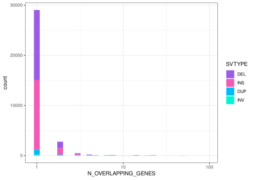
Filter out TRA and NAs
sv_lod_plot_df = sv_lod_df %>%
dplyr::filter(SVTYPE != "TRA",
!is.na(LOD)) %>%
dplyr::mutate(SVTYPE = factor(SVTYPE, levels = names(svtype_hist_pal)))
Plot
sv_lod_plot = sv_lod_plot_df %>%
ggplot(aes(log10(LN), LOD)) +
geom_point(aes(colour = SVTYPE), size = 1, alpha = .1) +
facet_wrap(~SVTYPE, nrow = 2, ncol = 2) +
scale_colour_manual(values = svtype_hist_pal) +
theme_cowplot() +
guides(colour = "none") +
xlab(expression(log[10](length))) +
ylab("LOD for pLI") +
theme(axis.text.x = element_text(size = 6),
strip.text = element_text(face = "bold"),
strip.background = element_blank()
)
sv_lod_plot = sv_lod_plot +
geom_smooth(data = sv_lod_plot_df %>% dplyr::filter(SVTYPE == "DEL"),
aes(log10(LN), LOD), colour = darker(svtype_hist_pal[["DEL"]], amount = 100)) +
geom_smooth(data = sv_lod_plot_df %>% dplyr::filter(SVTYPE == "INS"),
aes(log10(LN), LOD), colour = darker(svtype_hist_pal[["INS"]], amount = 100)) +
geom_smooth(data = sv_lod_plot_df %>% dplyr::filter(SVTYPE == "DUP"),
aes(log10(LN), LOD), colour = darker(svtype_hist_pal[["DUP"]], amount = 100)) +
geom_smooth(data = sv_lod_plot_df %>% dplyr::filter(SVTYPE == "INV"),
aes(log10(LN), LOD), colour = darker(svtype_hist_pal[["INV"]], amount = 100))
sv_lod_plot
## `geom_smooth()` using method = 'gam' and formula 'y ~ s(x, bs = "cs")'
## Warning: Removed 5 rows containing non-finite values (stat_smooth).
## `geom_smooth()` using method = 'gam' and formula 'y ~ s(x, bs = "cs")'
## Warning: Removed 4 rows containing non-finite values (stat_smooth).
## `geom_smooth()` using method = 'gam' and formula 'y ~ s(x, bs = "cs")'
## Warning: Removed 1 rows containing non-finite values (stat_smooth).
## `geom_smooth()` using method = 'loess' and formula 'y ~ x'

ggsave(here::here("docs/plots/sv_analysis/20210407_pli_lod.png"),
device = "png",
width = 30,
height = 20,
units = "cm",
dpi = 400)
Histogram of LOD
sv_lod_hist = sv_lod_plot_df %>%
ggplot() +
# geom_density(aes(LOD, fill = SVTYPE), position = "stack") +
geom_histogram(aes(LOD, fill = SVTYPE), bins = 70) +
scale_fill_manual(values = svtype_hist_pal) +
theme_cowplot() +
guides(fill = "none") +
scale_y_log10() +
ylab(expression(log[10](count))) +
xlab("LOD for pLI")
sv_lod_hist
## Warning: Removed 10 rows containing non-finite values (stat_bin).
## Warning: Transformation introduced infinite values in continuous y-axis
## Warning: Removed 121 rows containing missing values (geom_bar).

Stats for paper
How many SVs overlapped at least one gene
unique_svs = length(unique(sv_df_pol %>%
dplyr::filter(SVTYPE != "TRA") %>%
dplyr::pull(ID)))
overlapping_svs = sv_lod_plot_df %>%
dplyr::pull(ID) %>%
unique(.) %>%
length(.)
unique_svs
## [1] 134088
## [1] 30357
overlapping_svs / unique_svs
## [1] 0.2263961
How many SVs with LOD > 0?
sv_lod_plot_df %>%
summarise(TOTAL = n(),
N_OVER_0 = sum(LOD > 0),
N_OVER_10 = sum(LOD > 10),
PROP_OVER_0 = N_OVER_0 / TOTAL,
PROP_OVER_10 = N_OVER_10 / TOTAL,
LOD_90_PERC = quantile(LOD, 0.9))
## # A tibble: 1 × 6
## TOTAL N_OVER_0 N_OVER_10 PROP_OVER_0 PROP_OVER_10 LOD_90_PERC
## <int> <int> <int> <dbl> <dbl> <dbl>
## 1 30357 16111 2588 0.531 0.0853 9.05
Pull out high-LOD regions
sv_lod_df %>%
dplyr::filter(LOD > 50)
## # A tibble: 2 × 18
## DATASET CHROM POS ID ALT FILTER SVLEN SVTYPE CHR2 END GT LN ST STOP SV_INDEX N_OVERLAPPING_GENES LOD PLI_INDEX_MATCH…
## <fct> <chr> <int> <int> <chr> <chr> <int> <chr> <chr> <int> <chr> <int> <chr> <int> <int> <int> <dbl> <I<list>>
## 1 polished 2 15933747 20346 <INS> PASS 243 INS 2 15933747 0/1 236 +- 15933747 122844 5 53.7 <chr [5]>
## 2 polished 2 15922253 20343 <INS> PASS 1127 INS 2 15922253 0/1 1097 +- 15922253 238864 5 53.7 <chr [5]>
# Get indexes of overlapping genes
sv_lod_df %>%
dplyr::filter(LOD > 50) %>%
dplyr::group_by(SV_INDEX) %>%
dplyr::pull(PLI_INDEX_MATCHES)
[[1]] [1] “786” “787” “788” “789” “790”
[[2]] [1] “786” “787” “788” “789” “790”
# All the same. Take all
high_lod = sv_lod_df %>%
dplyr::filter(LOD > 50) %>%
dplyr::group_by(SV_INDEX) %>%
dplyr::pull(PLI_INDEX_MATCHES) %>%
unlist(.) %>%
unique(.)
# Get pLI matches
DT::datatable(pli_df[high_lod, ])
New final figure
final_svtype = ggdraw() +
draw_image(here::here("docs/plots/sv_analysis/20210325_sv_dels_lines.png"),
x = 0, y = 0, width = 1, height = .6, scale = 1.12) +
draw_plot(svlen_counts_plot,
x = 0, y = .8, width =.4, height = .2) +
draw_plot(sv_lod_plot,
x = .4, y = .8, width =.6, height = .2) +
draw_plot(sv_lod_hist,
x = 0, y = .6, width = .4, height = .2) +
draw_plot(svtype_counts_plot,
x = .4, y = .6, width = .6, height = .2) +
draw_plot_label(label = c("A", "B", "C", "D", "E"),
x = c(0, .4, 0, .4, 0),
y = c(1, 1, .8, .8, .6),
size = 25,color = "#4f0943")
## `geom_smooth()` using method = 'gam' and formula 'y ~ s(x, bs = "cs")'
## Warning: Removed 5 rows containing non-finite values (stat_smooth).
## `geom_smooth()` using method = 'gam' and formula 'y ~ s(x, bs = "cs")'
## Warning: Removed 4 rows containing non-finite values (stat_smooth).
## `geom_smooth()` using method = 'gam' and formula 'y ~ s(x, bs = "cs")'
## Warning: Removed 1 rows containing non-finite values (stat_smooth).
## `geom_smooth()` using method = 'loess' and formula 'y ~ x'
## Warning: Removed 10 rows containing non-finite values (stat_bin).
## Warning: Transformation introduced infinite values in continuous y-axis
## Warning: Removed 121 rows containing missing values (geom_bar).

ggsave(here::here("docs/plots/sv_analysis/20210325_sv_dels_lines.png"),
device = "png",
dpi = 400,
units = "cm",
width = 30,
height = 42)
Find overlaps with genes and exons
Get ranges
Genes and exons
# Get list of genes and exons from biomaRt
## Select dataset
olat_mart = biomaRt::useEnsembl(biomart = "ensembl", dataset = "olatipes_gene_ensembl")
## Ensembl site unresponsive, trying useast mirror
## Convert genes to GRanges
gene_ranges = biomaRt::getBM(attributes = c("chromosome_name",
"start_position",
"end_position",
"ensembl_gene_id"),
mart = olat_mart) %>%
GenomicRanges::makeGRangesFromDataFrame(ignore.strand = T,
seqnames.field = "chromosome_name",
start.field = "start_position",
end.field = "end_position")
## Convert exons to GRanges
exon_ranges = biomaRt::getBM(attributes = c("chromosome_name",
"exon_chrom_start",
"exon_chrom_end",
"ensembl_gene_id",
"ensembl_transcript_id",
"ensembl_exon_id"),
mart = olat_mart) %>%
GenomicRanges::makeGRangesFromDataFrame(ignore.strand = T,
seqnames.field = "chromosome_name",
start.field = "exon_chrom_start",
end.field = "exon_chrom_end")
Stats on ranges
# Number of ranges
## Genes
length(gene_ranges)
## [1] 24365
## Exons
length(exon_ranges)
## [1] 404636
# Total bases covered by
## Genes
gene_bases = gene_ranges %>%
disjoin(.) %>%
width(.) %>%
sum(.)
## Exons
exon_bases = exon_ranges %>%
disjoin(.) %>%
width(.) %>%
sum(.)
# Percentage bases covered
## Genes
gene_bases / sum(chroms$end) * 100
## [1] 55.16376
## Exons
exon_bases / sum(chroms$end) * 100
## [1] 9.385916
SVs
sv_ranges_novel = sv_df_pol %>%
dplyr::filter(!duplicated(ID)) %>%
# For all TRA, set STOP as POS
dplyr::mutate(STOP = dplyr::if_else(SVTYPE == "TRA",
POS,
END)) %>%
# For 9066/265857 INS and 272/23991 DUP where END is less than POS, set `STOP` as same as `POS`
dplyr::mutate(STOP = dplyr::if_else(SVTYPE %in% c("INS", "DUP") & END < POS,
POS,
STOP)) %>%
# Remove "chr" prefix" from CHROM
dplyr::mutate(CHROM = str_remove(CHROM, "chr")) %>%
# Conver to ranges
GenomicRanges::makeGRangesFromDataFrame(ignore.strand = T,
seqnames.field = "CHROM",
start.field = "POS",
end.field = "STOP")
Find overlaps
# With genes
gene_olaps = findOverlaps(sv_ranges_novel,
gene_ranges,
ignore.strand = T)
# With exons
exon_olaps = findOverlaps(sv_ranges_novel,
exon_ranges,
ignore.strand = T)
# Total SVs
length(sv_ranges_novel)
## [1] 143326
# How many SVs overlap genes
length(unique(queryHits(gene_olaps)))
## [1] 74271
# How many SVs overlap exons
length(unique(queryHits(exon_olaps)))
## [1] 11448
Find overlaps between DEL and INS based on reference-anchored and graph genome approaches
Read in data
High-confidence graph calls
googledrive::drive_get("MIKK SV assemblies paper",
shared_drive = googledrive::shared_drive_get("Indigene")) %>%
googledrive::drive_ls(.)
## ℹ Suitable tokens found in the cache, associated with these emails:
## • 'brettell@ebi.ac.uk'
## • 'ian.brettell@googlemail.com'
## Defaulting to the first email.
## ! Using an auto-discovered, cached token.
## To suppress this message, modify your code or options to clearly consent to the use of a cached token.
## See gargle's "Non-interactive auth" vignette for more details:
## <https://gargle.r-lib.org/articles/non-interactive-auth.html>
## ℹ The googledrive package is using a cached token for 'brettell@ebi.ac.uk'.
## Auto-refreshing stale OAuth token.
## ✓ The input `path` resolved to exactly 1 file.
## # A dribble: 4 × 3
## name id drive_resource
## <chr> <drv_id> <list>
## 1 GB_revisions 1z3w4cVemfLgy3rqjkyedZMm9dzySFSBY <named list [31]>
## 2 Figures and tables 1jxseUwEzJso34T4gqanJFqI2XoM6yqGP <named list [31]>
## 3 The Inbred Medaka Kiyosu (MIKK) Panel SV and assemblies 1CWsa3LIsj2eIUq0mGbeb79encxXK34HawE3xq_jYGhs <named list [33]>
## 4 Genome Biology Submission 1byuYSYf7CnndJ5FX9psjEsDbFDJ4jEAJ <named list [32]>
tables_id = googledrive::drive_ls(googledrive::as_id("1jxseUwEzJso34T4gqanJFqI2XoM6yqGP"))
tables_id
## # A dribble: 14 × 3
## name id drive_resource
## <chr> <drv_id> <list>
## 1 graph_deletions_loci 1-TGNnM1zHyclstVlFEtDSrmoeLCd53ZxAwNK5rO3SQw <named list [33]>
## 2 graph_alternative_divergent loci 1OMaJ25qAeDmLYv85h87ax26Q3RujGX7cTbViHzmESmg <named list [33]>
## 3 Supplementary figures 1btIbLF-nwK8HUnc8hBeJqaw7ea5I-l0M <named list [31]>
## 4 pycoMeth_summary_intervals 12yqF3CkX5K4ozC9IkPuFnAj48td55TSClTPsknY6d-8 <named list [32]>
## 5 Assembly_stats 1mGdOXOmgHvhFF5ezJsTUX1gBCHC9n0VQf1VMkWfraGs <named list [32]>
## 6 Main figures 1H3Y91wjBvZPfvdLV2TTmVzIx3gd4RWBf <named list [31]>
## 7 Supplementary Tables 1H9zxeVCU7RtRhNNa1_ZfFZ-2K6mI0aQO3DBJ6s3lfxM <named list [33]>
## 8 Supplementary Figures 15_JG8k9i9_OOQDm9mZnKlasczaYHxdh-71w6C1qgsg4 <named list [33]>
## 9 Supplementary File 2 - Circos plots.pdf 1ejgyVKWCR-IC2UfeciuerFINgMiUs7yW <named list [38]>
## 10 Supplementary File 1 - Karyoplots.pdf 1g8L3TawY1X1N2D2M6Mv1Qb6stNzigv4x <named list [39]>
## 11 Segments Usage sample stats 1iiQNjVXPJSudoxLMoo8hnXUBbs63-pDbblkMd8tV2d0 <named list [32]>
## 12 Graph stats 19svaqk0wJD-wp1vYiqlKBX45PR3WutPDiZeoLfqIJug <named list [32]>
## 13 Sequencing_stats 1OyNh_HErz6Nl2EjI3-75yYkY5RObIznpn1daaHSmG9Q <named list [32]>
## 14 DNA_methylation 1gD7CFExDIW8SV7Dve-a3IutW-Vz8xzQyHzlJSDv2IkM <named list [31]>
del_id = tables_id$id[tables_id$name == "graph_deletions_loci"]
ins_id = tables_id$id[tables_id$name == "graph_alternative_divergent loci"]
DEL
del_tbl = googlesheets4::read_sheet(del_id,
range = "A1:A17") %>%
tidyr::separate("HdrR locus", into = c("CHROM", "POS"), sep = ":", remove = F) %>%
tidyr::separate("POS", into = c("START", "END"), sep = "-") %>%
# convert to integer
dplyr::mutate(dplyr::across(c("CHROM", "START", "END"),
~as.integer(.x))) %>%
dplyr::arrange(CHROM, START)
## ! Using an auto-discovered, cached token.
## To suppress this message, modify your code or options to clearly consent to the use of a cached token.
## See gargle's "Non-interactive auth" vignette for more details:
## <https://gargle.r-lib.org/articles/non-interactive-auth.html>
## ℹ The googlesheets4 package is using a cached token for 'brettell@ebi.ac.uk'.
## Auto-refreshing stale OAuth token.
## ✓ Reading from "graph_deletions_loci".
## ✓ Range 'A1:A17'.
INS
ins_tbl = googlesheets4::read_sheet(ins_id,
range = "A1:A20") %>%
# Remove the "HDRR_" prefix in the first row
dplyr::mutate(`HdrR locus` = stringr::str_remove(`HdrR locus`, "HDRR_")) %>%
tidyr::separate("HdrR locus", into = c("CHROM", "POS"), sep = ":", remove = F) %>%
tidyr::separate("POS", into = c("START", "END"), sep = "-") %>%
# convert to integer
dplyr::mutate(dplyr::across(c("CHROM", "START", "END"),
~as.integer(.x))) %>%
dplyr::arrange(CHROM, START)
## ✓ Reading from "graph_alternative_divergent loci".
## ✓ Range 'A1:A20'.
Polished calls
pol_loci_file = file.path(lts_dir, "sv_analysis/loci/all.csv")
lines = c("4-1","7-1","11-1","69-1","79-2","80-1","117-2","131-1","134-1","134-2")
col_names = c("CHROM", "START", "END", "SVTYPE", "SVLEN", lines)
# Read in loci
polished_loci = readr::read_csv(pol_loci_file,
col_names = col_names,
col_types = c("cddcdcccccccccc")) %>%
# remove MT
dplyr::filter(CHROM != "MT") %>%
# covert `CHROM` to integer
dplyr::mutate(CHROM = as.integer(CHROM)) %>%
# arrange by CHROM, POS
dplyr::arrange(CHROM, START)
polished_loci_nomiss = polished_loci %>%
# remove variants where all samples are missing
dplyr::filter(dplyr::if_any(.cols = dplyr::all_of(lines),
.fns = ~.x != "./.")) %>%
# keep only variants where at least one sample has the alt allele
dplyr::filter(dplyr::if_any(.cols = dplyr::all_of(lines),
.fns = ~.x %in% c("0/1", "1/1"))) %>%
# remove duplicated rows
dplyr::distinct()
pol_loci_list = polished_loci_nomiss %>%
# split into list by SVTYPE
split(., f = .$SVTYPE)
Find overlaps
DEL
# Convert graph loci to GRanges
del_tbl_r = del_tbl %>%
GenomicRanges::makeGRangesFromDataFrame(., ignore.strand = T)
# Convert polished loci to GRanges
del_pol_r = pol_loci_list$DEL %>%
GenomicRanges::makeGRangesFromDataFrame(., ignore.strand = T, keep.extra.columns = T)
# Find overlaps
del_overlaps = IRanges::findOverlaps(del_tbl_r, del_pol_r)
del_overlaps
## Hits object with 66 hits and 0 metadata columns:
## queryHits subjectHits
## <integer> <integer>
## [1] 2 25618
## [2] 2 25619
## [3] 2 25620
## [4] 2 25621
## [5] 3 38017
## ... ... ...
## [62] 13 80893
## [63] 15 82227
## [64] 15 82228
## [65] 15 82229
## [66] 15 82230
## -------
## queryLength: 16 / subjectLength: 101863
# Get paired intersections
del_intersects = IRanges::pintersect(del_tbl_r[del_overlaps@from], del_pol_r[del_overlaps@to])
del_intersects
## GRanges object with 66 ranges and 1 metadata column:
## seqnames ranges strand | hit
## <Rle> <IRanges> <Rle> | <logical>
## [1] 6 4103589-4114645 * | TRUE
## [2] 6 4103589-4114703 * | TRUE
## [3] 6 4103589-4114897 * | TRUE
## [4] 6 4106016-4108020 * | TRUE
## [5] 9 9672926-9673070 * | TRUE
## ... ... ... ... . ...
## [62] 19 7041534-7051052 * | TRUE
## [63] 19 21994732-22004171 * | TRUE
## [64] 19 21994735-22004171 * | TRUE
## [65] 19 21998075-21998867 * | TRUE
## [66] 19 22003035-22003094 * | TRUE
## -------
## seqinfo: 11 sequences from an unspecified genome; no seqlengths
# Create final data frame
del_final = tibble::tibble(# Graph deletion ranges and widths
del_tbl[del_overlaps@from, ] %>%
dplyr::rename(CHROM_G = CHROM,
START_G = START,
END_G = END),
WIDTH_G= BiocGenerics::width(del_tbl_r[del_overlaps@from, ]),
# Polished hits ranges and widths
del_pol_r[del_overlaps@to] %>%
GenomicRanges::granges(.) %>%
data.frame(.) %>%
dplyr::select(CHROM_P = seqnames,
START_P = start,
END_P = end,
WIDTH_P = width),
# Add paired intersections
del_intersects %>%
GenomicRanges::granges(.) %>%
data.frame(.) %>%
dplyr::select(CHROM_I = seqnames,
START_I = start,
END_I = end,
WIDTH_I = width),
# Add genotypes
pol_loci_list$DEL[del_overlaps@to, ] %>%
dplyr::select(all_of(lines))
) %>%
# Get proportion of graph variants covered by intersecting polished variants
dplyr::mutate(PROP_COV = WIDTH_I / WIDTH_G)
DT::datatable(del_final)
# Find the maximum covered
del_max = del_final %>%
dplyr::group_by(`HdrR locus`) %>%
dplyr::slice_max(WIDTH_I) %>%
# add SVs that had no overlaps and remove duplicates
rbind(., del_tbl %>%
dplyr::select(`HdrR locus`,
CHROM_G = CHROM,
START_G = START,
END_G = END) %>%
dplyr::mutate(WIDTH_G = END_G - START_G + 1)) %>%
dplyr::distinct(`HdrR locus`, .keep_all = T) %>%
# Sort by chromosome and start position
dplyr::arrange(CHROM_G, START_G) %>%
# remove ties for WIDTH_I
dplyr::distinct(`HdrR locus`, .keep_all = T) %>%
# Unite polished locus
tidyr::unite(col = POL_LOC, START_P, END_P, sep = "-") %>%
tidyr::unite(col = `HdrR locus (reference-anchored)`, CHROM_P, POL_LOC, sep = ":") %>%
# Unite intersection locus
tidyr::unite(col = INT_LOC, START_I, END_I, sep = "-") %>%
tidyr::unite(col = `HdrR locus (intersection)`, CHROM_I, INT_LOC, sep = ":") %>%
# Select key columns
dplyr::select(`HdrR locus (graph-based)` = `HdrR locus`,
-c(CHROM_G, START_G, END_G),
`SV length (graph-based)` = WIDTH_G,
`HdrR locus (reference-anchored)`,
`SV length (reference-anchored)` = WIDTH_P,
`Length of intersection` = WIDTH_I,
`Proportion overlap (intersection / graph SV length)` = PROP_COV,
dplyr::all_of(lines)) %>%
# Replace NA in `HdrR locus (polished)`
dplyr::mutate(`HdrR locus (reference-anchored)` = dplyr::na_if(`HdrR locus (reference-anchored)`, "NA:NA-NA"))
DT::datatable(del_max)
# Write to google sheet
googlesheets4::range_write(ss = del_id,
data = del_max,
range = "A27",
reformat = F)
INS
# Convert graph loci to GRanges
ins_tbl_r = ins_tbl %>%
GenomicRanges::makeGRangesFromDataFrame(., ignore.strand = T)
# Convert polished loci to GRanges
ins_pol_r = pol_loci_list$INS %>%
GenomicRanges::makeGRangesFromDataFrame(., ignore.strand = T, keep.extra.columns = T)
# Find overlaps
ins_overlaps = IRanges::findOverlaps(ins_tbl_r, ins_pol_r)
ins_overlaps
## Hits object with 82 hits and 0 metadata columns:
## queryHits subjectHits
## <integer> <integer>
## [1] 1 4161
## [2] 1 4162
## [3] 1 4163
## [4] 1 4164
## [5] 2 5757
## ... ... ...
## [78] 19 82146
## [79] 19 82147
## [80] 19 82148
## [81] 19 82149
## [82] 19 82150
## -------
## queryLength: 19 / subjectLength: 91955
# Create final data frame
ins_final = tibble::tibble(# Graph insertion ranges and widths
ins_tbl[ins_overlaps@from, ] %>%
dplyr::rename(CHROM_G = CHROM,
START_G = START,
END_G = END),
WIDTH_G= BiocGenerics::width(ins_tbl_r[ins_overlaps@from, ]),
# Polished hits ranges and widths
ins_pol_r[ins_overlaps@to] %>%
data.frame(.) %>%
dplyr::select(CHROM_P = seqnames,
START_P = start,
END_P = end,
WIDTH_P = SVLEN),
# Add genotypes
pol_loci_list$INS[ins_overlaps@to, ] %>%
dplyr::select(all_of(lines))
) %>%
# Unite polished locus
tidyr::unite(col = POL_LOC, START_P, END_P, sep = "-") %>%
tidyr::unite(col = `HdrR locus (reference-anchored)`, CHROM_P, POL_LOC, sep = ":") %>%
# Select key columns
dplyr::select(`HdrR locus (graph-based)` = `HdrR locus`,
-c(CHROM_G, START_G, END_G),
`SV length (graph-based)` = WIDTH_G,
`HdrR locus (reference-anchored)`,
`SV length (reference-anchored)` = WIDTH_P,
dplyr::all_of(lines))
DT::datatable(ins_final)
# Create summary table
ins_summary = ins_final %>%
dplyr::group_by(`HdrR locus (graph-based)`, `SV length (graph-based)`) %>%
dplyr::summarise(`Total bases covered by INS (reference-based)` = sum(`SV length (reference-anchored)`)) %>%
# calculate proportion covered
dplyr::mutate(`Proportion of graph-based INS covered by reference-based INS` = `Total bases covered by INS (reference-based)` / `SV length (graph-based)`) %>%
# bind all INS to pick up those without overlaps
rbind(., ins_tbl %>%
dplyr::select(`HdrR locus (graph-based)` = `HdrR locus`)) %>%
# take unique
dplyr::distinct(`HdrR locus (graph-based)`, .keep_all = T) %>%
# split to order
tidyr::separate(col = `HdrR locus (graph-based)`, into = c("CHROM", "POS"), sep = ":", remove = F) %>%
tidyr::separate(col = POS, into = c("START", "END"), sep = "-", remove = T) %>%
# convert CHROM to integer
dplyr::mutate(CHROM = as.integer(CHROM)) %>%
# order
dplyr::arrange(CHROM, START) %>%
# select key columns
dplyr::select(-c(CHROM, START, END))
## `summarise()` has grouped output by 'HdrR locus (graph-based)'. You can override using the `.groups` argument.
DT::datatable(ins_summary)
Save to sheets
# Write full hits list
googlesheets4::range_write(ss = ins_id,
data = ins_final,
range = "A27",
reformat = F)
# Write summary
googlesheets4::range_write(ss = ins_id,
data = ins_summary,
range = "A112",
reformat = F)